NHỊP NHANH TRÊN THẤT (SVT) — TRỌN BỘ 11 BÀI
17.1. Nhịp nhanh trên thất (SVT) – ECG
Nhịp nhanh trên thất (supraventricular tachycardia – SVT), nhịp nhanh phức bộ hẹp (narrow complex tachycardia)
Xung động trên thất
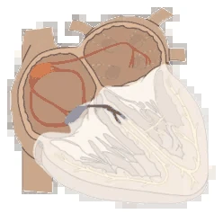
- Vùng trên thất được định nghĩa trong điện sinh lý học là
- Phần tim nằm phía trên chỗ chia đôi của bó His
- Về giải phẫu bao gồm toàn bộ hai tâm nhĩ và bộ nối nhĩ thất (phía trên chỗ chia đôi)
- Ức chế vượt tần số (overdrive suppression)
- Là một cơ chế điện sinh lý
- Ổ có tần số cao nhất (về sinh lý, đó là nút xoang)
- Làm bất hoạt các ổ có tần số thấp hơn (bộ nối nhĩ thất, sợi Purkinje thất)
- Nhờ vậy tim đập theo ổ có tần số cao nhất
- Xung động trên thất
- Là xung động xuất phát từ vùng trên thất
- Về sinh lý xuất phát từ nút xoang (nhịp xoang)
- Khử cực hai tâm nhĩ (sóng P) rồi đi xuống hai tâm thất
- Bộ nối nhĩ thất là cầu nối điện học giữa tâm nhĩ và tâm thất
- Trong lúc khử cực tâm thất, phức bộ QRS được tạo thành
- Là xung động xuất phát từ vùng trên thất
Phức bộ QRS hẹp
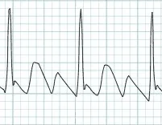
- Xảy ra khi hai tâm thất được khử cực qua hệ thống dẫn truyền thất còn nguyên vẹn
- Hệ thống dẫn truyền thất
- Xung động trên thất đi xuống hai tâm thất qua bộ nối nhĩ thất
- Rồi đi tiếp trong hệ thống dẫn truyền (các nhánh Tawara)
- Rất nhanh khử cực hai tâm thất trong vòng 0,12s
- Vì vậy, khi hệ thống dẫn truyền thất còn nguyên vẹn
- Phức bộ QRS hẹp (< 0,12s)
Phân loại cơ bản các nhịp nhanh
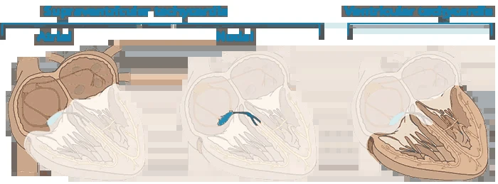
Phân loại cơ bản các nhịp nhanh
- Nhịp nhanh được định nghĩa là tần số thất > 100/phút.
- Các nhịp nhanh được chia thành 3 nhóm:
- Nhịp nhanh trên thất
- Nhịp nhanh nhĩ (xung động xuất phát từ hai tâm nhĩ)
- Nhịp nhanh bộ nối (xung động xuất phát từ bộ nối nhĩ thất)
- Nhịp nhanh thất (xung động xuất phát từ hai tâm thất)
- Nhịp nhanh trên thất
Nhịp nhanh trên thất (SVT)
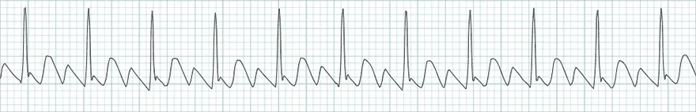
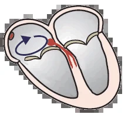
- Là một nhịp nhanh (tần số > 100/phút.) với QRS hẹp (< 0,12s)
- Xung động xuất phát từ vùng trên thất (với tần số > 100/phút.)
- Rồi đi qua bộ nối nhĩ thất xuống hai tâm thất
- Xung động có thể phát sinh theo 3 cơ chế:
- Tăng tính tự động (increased automaticity)
- Hoạt động khởi kích (trigger activity)
- Vòng vào lại (re-entry)
Nhịp nhanh phức bộ hẹp
- Tần số: 136/phút.
- Phức bộ QRS hẹp (< 0,12s)
- Cho thấy các xung động là xung động trên thất
- Rồi khử cực hai tâm thất qua bộ nối nhĩ thất (QRS)
- Cho thấy các xung động là xung động trên thất
- Đặc điểm đặc trưng của nhịp nhanh thất là phức bộ QRS giãn rộng (≥ 0,12s)
- Vì xung động xuất phát từ hai tâm thất
- Ngoại lệ là 2 loại nhịp nhanh thất (VT) có phức bộ hẹp:
- VT xuất phát từ vách liên thất
- VT phân nhánh (fascicular VT)
- Trên ECG này là cuồng nhĩ
- Xung động trên thất quay vòng trong tâm nhĩ (vòng vào lại)
- Và tạo ra các sóng răng cưa đặc trưng (thay cho sóng P)
Các SVT thường gặp nhất
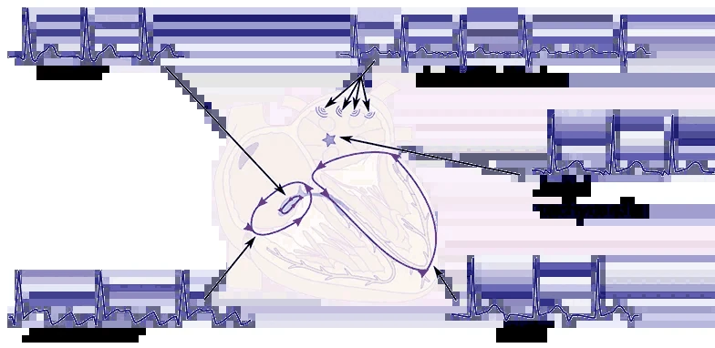
- Trong mọi SVT, xung động xuất phát từ hai tâm nhĩ (phía trên chỗ chia đôi của bó His)
- Rồi đi qua bộ nối nhĩ thất xuống hai tâm thất
- Hai tâm thất sau đó được khử cực nhanh (trong vòng 0,12s) qua các nhánh bó His
- Nhờ vậy, phức bộ QRS hẹp (< 0,12s) được tạo ra
- Rồi đi qua bộ nối nhĩ thất xuống hai tâm thất
- Nếu xung động quay vòng, đó là cơ chế vòng vào lại
- Xung động cũng có thể quay vòng giữa tâm nhĩ và tâm thất
Các nhịp nhanh trên thất
- Nhịp nhanh xoang
- Nhịp nhanh xoang không thích hợp
- Nhịp nhanh vào lại nút xoang nhĩ
- Nhịp nhanh nhĩ
- Nhịp nhanh vào lại trong nhĩ
- Nhịp nhanh nhĩ đa ổ
- Rung nhĩ
- Cuồng nhĩ
- Nhịp nhanh bộ nối
- Nhịp tự thất bộ nối gia tốc
- Nhịp nhanh vào lại nút nhĩ thất (AVNRT)
- Nhịp nhanh vào lại nhĩ thất (AVRT)
- Nhịp nhanh bộ nối vào lại vĩnh viễn (PJRT)
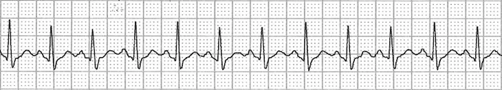
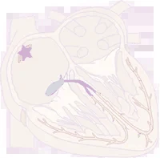
Nhịp nhanh xoang
- Xung động xuất phát từ nút xoang
- Mỗi xung động tạo một sóng P, rồi đi xuống hai tâm thất (QRS)
- Cơ chế là tăng tính tự động
- Nhịp nhanh xoang
- Là đáp ứng sinh lý của cơ thể với stress (căng thẳng, gắng sức, nhiệt độ)
Nhịp nhanh xoang không thích hợp
- Xung động xuất phát từ nút xoang
- Mỗi xung động tạo một sóng P, rồi đi xuống hai tâm thất (QRS)
- Cơ chế là tăng tính tự động
- Là nhịp nhanh xoang bệnh lý (không rõ nguyên nhân)
- Nút xoang bị "lập trình lại" sang trạng thái nhịp nhanh
- Nhịp nhanh xoang không thích hợp
- Có hình ảnh ECG giống hệt nhịp nhanh xoang
- Vì xung động xuất phát từ cùng một vị trí (nút xoang)
- Có hình ảnh ECG giống hệt nhịp nhanh xoang
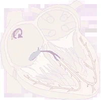
Nhịp nhanh vào lại nút xoang nhĩ
- Xung động xuất phát từ nút xoang
- Mỗi xung động tạo một sóng P, rồi đi xuống hai tâm thất (QRS)
- Cơ chế là vòng vào lại (xung động quay vòng quanh nút xoang)
- Nhịp nhanh vào lại nút xoang nhĩ
- Có hình ảnh ECG giống hệt nhịp nhanh xoang
- Vì xung động xuất phát từ cùng một vị trí (nút xoang)
- Có hình ảnh ECG giống hệt nhịp nhanh xoang
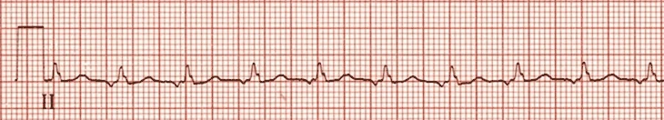
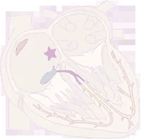
Nhịp nhanh nhĩ
- Xung động xuất phát từ một ổ ngoại vị đơn độc trong tâm nhĩ (ngoài nút xoang)
- Mỗi xung động tạo một sóng P, rồi đi xuống hai tâm thất (QRS)
- Sóng P từ ổ ngoại vị khác với sóng P của nút xoang (có vectơ khác)
- Mỗi xung động tạo một sóng P, rồi đi xuống hai tâm thất (QRS)
- Cơ chế là tăng tính tự động (thường gặp nhất)
- Nhịp nhanh nhĩ
- Trên ECG có sóng P (khác với sóng P xoang)
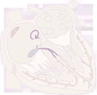
Nhịp nhanh vào lại trong nhĩ
- Xung động xuất phát từ một vòng vào lại trong tâm nhĩ
- Vòng vào lại không đi qua
- Nút xoang (nếu đi qua thì đó là nhịp nhanh vào lại nút xoang nhĩ)
- Eo van ba lá – tĩnh mạch chủ dưới (nếu đi qua thì đó là cuồng nhĩ)
- Mỗi xung động tạo một sóng P, rồi đi xuống hai tâm thất (QRS)
- Sóng P từ ổ ngoại vị khác với sóng P của nút xoang (có vectơ khác)
- Cơ chế là vòng vào lại
- Nhịp nhanh vào lại trong nhĩ
- Có hình ảnh ECG giống nhịp nhanh nhĩ
- Xảy ra sau các phẫu thuật tim ở tâm nhĩ
- Vòng vào lại quay quanh một sẹo
- Trên ECG có sóng P (khác với sóng P xoang)
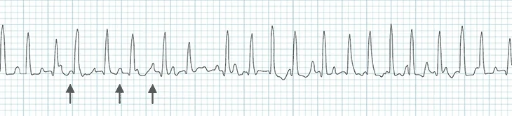
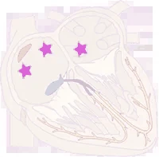
Nhịp nhanh nhĩ đa ổ
- Xung động xuất phát từ ít nhất 3 ổ ngoại vị trong hai tâm nhĩ
- Mỗi xung động tạo một sóng P, rồi đi xuống hai tâm thất (QRS)
- Mỗi ổ (xung động) tạo ra một sóng P khác nhau (vectơ khác nhau)
- Mỗi xung động tạo một sóng P, rồi đi xuống hai tâm thất (QRS)
- Cơ chế là tăng tính tự động (thường gặp nhất)
- Nhịp nhanh nhĩ đa ổ
- Trên ECG có 3 sóng P với hình dạng khác nhau
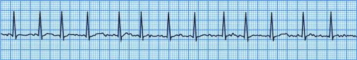
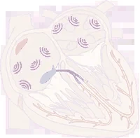
Rung nhĩ
- Xung động xuất phát từ nhiều ổ trong hai tâm nhĩ với tần số: 350-600/phút.
- Bộ nối nhĩ thất đóng vai trò bộ lọc (không phải xung động nào cũng xuống được tâm thất)
- Các xung động không tạo ra sóng P, còn xung động nào xuống được tâm thất thì tạo ra phức bộ QRS
- Cơ chế là vòng vào lại nhỏ (thường gặp nhất)
- Rung nhĩ
- Trên ECG, không có sóng P và phức bộ QRS không đều một cách không đều
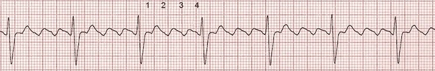
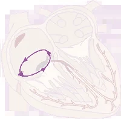
Cuồng nhĩ
- Xung động quay vòng trong nhĩ phải (thường gặp nhất là quanh vùng eo, với tần số: 300/phút.)
- Với mỗi vòng quay trong tâm nhĩ, xung động tạo ra một "răng cưa"
- Bộ nối nhĩ thất đóng vai trò bộ lọc (không phải xung động của mỗi vòng quay nào cũng xuống được tâm thất)
- Chỉ xung động của mỗi vòng thứ hai, thứ ba… mới xuống được tâm thất
- Cơ chế là vòng vào lại lớn (thường gặp nhất)
- Cuồng nhĩ
- Trên ECG, xung động nhĩ tạo ra các sóng răng cưa đặc trưng
- Không phải xung động nào cũng đi qua bộ nối nhĩ thất xuống tâm thất
- (Trên ECG, biểu hiện là cuồng nhĩ với blốc nhĩ thất 4:1)
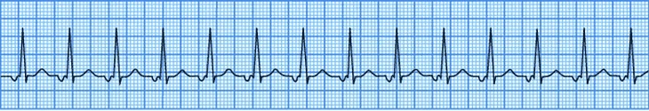
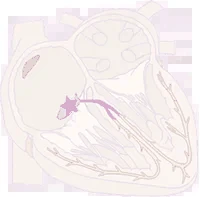
Nhịp nhanh bộ nối
- Xung động xuất phát từ bộ nối nhĩ thất
- Mỗi xung động tạo một sóng P ngược chiều (sóng P âm)
- Rồi đi xuống hai tâm thất (QRS)
- Sóng P có thể nằm trước, trong hoặc sau phức bộ QRS
- Mỗi xung động tạo một sóng P ngược chiều (sóng P âm)
- Cơ chế là tăng tính tự động
- Nhịp nhanh bộ nối
- Trên ECG thấy sóng P ngược chiều (âm) ngay trước QRS
- Sóng P có thể xuất hiện trước, trong hoặc sau phức bộ QRS
- Trên ECG thấy sóng P ngược chiều (âm) ngay trước QRS
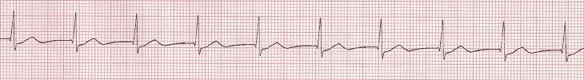
Nhịp nhanh bộ nối không kịch phát
- Thường được gọi là nhịp tự thất bộ nối gia tốc (accelerated junctional rhythm)
- Xung động xuất phát từ bộ nối nhĩ thất
(giống hệt nhịp nhanh bộ nối) - Cơ chế là tăng tính tự động
- Xảy ra khi bộ nối nhĩ thất bị tổn thương nặng, trong ngộ độc digoxin, nhồi máu cơ tim
- Nhịp nhanh bộ nối không kịch phát có tần số 70-130/phút. (mặc dù tần số < 100/phút. không được coi là nhịp nhanh)
- Trên ECG thấy sóng P ngược chiều (âm) ngay trước QRS
- Sóng P có thể nằm trước, trong hoặc sau phức bộ QRS
- Đây là dạng không kịch phát (không khởi phát đột ngột và không kết thúc đột ngột)
- Trên ECG thấy sóng P ngược chiều (âm) ngay trước QRS
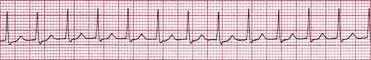
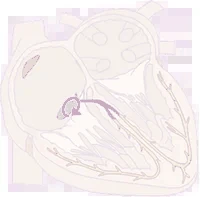
Nhịp nhanh vào lại nút nhĩ thất (AVNRT)
- Xung động quay vòng trong bộ nối nhĩ thất
- Xung động khử cực hai tâm thất (QRS) rồi khử cực ngược chiều hai tâm nhĩ (sóng P)
- Sóng P nằm ngay sau QRS
- Xung động khử cực hai tâm thất (QRS) rồi khử cực ngược chiều hai tâm nhĩ (sóng P)
- Cơ chế là vòng vào lại
- Nhịp nhanh vào lại nút nhĩ thất (AVNRT)
- Sóng P ngược chiều (âm) nằm ngay sau QRS (đôi khi sóng P bị ẩn trong QRS)
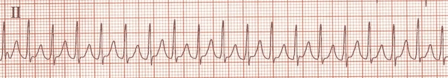
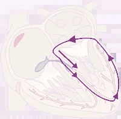
Nhịp nhanh vào lại nhĩ thất (AVRT)
- Bệnh nhân có hội chứng WPW (đường dẫn truyền phụ bẩm sinh)
- Tâm nhĩ và tâm thất được nối với nhau về điện học qua 2 vị trí:
- Đường dẫn truyền phụ và bộ nối nhĩ thất
- Tâm nhĩ và tâm thất được nối với nhau về điện học qua 2 vị trí:
- Xung động quay vòng từ tâm nhĩ xuống tâm thất (qua bộ nối nhĩ thất và đường dẫn truyền phụ)
- Xung động khử cực hai tâm thất qua bộ nối nhĩ thất (QRS)
- Rồi đi ngược chiều qua đường dẫn truyền phụ lên hai tâm nhĩ (sóng P)
- Chiều ngược lại của xung động là nhịp nhanh phức bộ giãn rộng (AVRT chiều ngược – antidromic AVRT)
- Xung động khử cực hai tâm thất qua bộ nối nhĩ thất (QRS)
- Cơ chế là vòng vào lại lớn
- Nhịp nhanh vào lại nhĩ thất (AVRT chiều xuôi – orthodromic AVRT)
- Sóng P ngược chiều (âm) nằm sau QRS (bị ẩn trong sóng T)
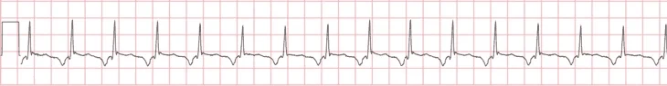
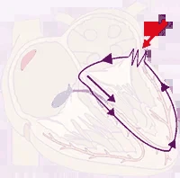
Nhịp nhanh bộ nối vào lại vĩnh viễn (PJRT)
- Cơ chế tương tự nhịp nhanh vào lại nhĩ thất chiều xuôi (orthodromic AVRT)
- Khác biệt duy nhất là dẫn truyền qua đường phụ bị chậm lại
- Nhịp nhanh bộ nối vào lại vĩnh viễn (PJRT)
- Sóng P ngược chiều (âm) nằm sau QRS (không nằm trước QRS)
- Khoảng RP > khoảng PR
- Sóng P ngược chiều (âm) nằm sau QRS (không nằm trước QRS)
17.1.1. Nhịp nhanh trên thất (SVT) – Chẩn đoán phân biệt
Chẩn đoán phân biệt (DDx) nhịp nhanh trên thất (supraventricular tachycardia – SVT)
Nhịp nhanh trên thất (SVT)
- SVT là một nhịp nhanh (tần số tim > 100/phút.) với phức bộ QRS hẹp (< 0,12s)
- Xung động xuất phát từ vùng trên thất (phía trên chỗ chia đôi của bó His)
- Xung động có thể phát sinh theo 3 cơ chế:
- Tăng tính tự động
- Hoạt động khởi kích
- Vòng vào lại
- Đặc điểm then chốt của SVT là phức bộ QRS hẹp (< 0,12s)
- Đặc điểm then chốt của nhịp nhanh thất là phức bộ QRS giãn rộng (≥ 0,12s)
- Vì xung động xuất phát từ hai tâm thất
- Ngoại lệ gồm 2 loại nhịp nhanh thất (VT) có phức bộ hẹp:
- VT xuất phát từ vùng vách liên thất
- VT phân nhánh (fascicular VT)
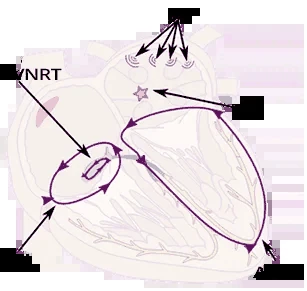
- Các nhịp nhanh trên thất (SVT) theo cơ chế:
- Nhịp nhanh xoang
- Nhịp nhanh xoang không thích hợp
- Nhịp nhanh vào lại nút xoang nhĩ
- Nhịp nhanh nhĩ (AT)
- Nhịp nhanh vào lại trong nhĩ
- Nhịp nhanh nhĩ đa ổ
- Rung nhĩ (AF)
- Cuồng nhĩ (AFL)
- Nhịp nhanh bộ nối
- Nhịp nhanh bộ nối không kịch phát
- Nhịp nhanh vào lại nút nhĩ thất (AVNRT)
- Nhịp nhanh vào lại nhĩ thất (AVRT)
- Nhịp nhanh bộ nối vào lại vĩnh viễn (PJRT)
SVT kịch phát
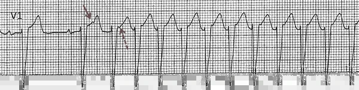
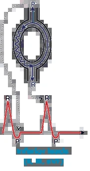
- SVT kịch phát là loại khởi phát đột ngột và kết thúc đột ngột
- Yếu tố khởi kích thường gặp nhất là ngoại tâm thu nhĩ
- Kéo dài từ vài giây đến vài giờ
- Bệnh nhân cảm thấy hồi hộp trống ngực (tim đập thình thịch) trong cơn SVT
- Cơn SVT có thể được cắt bằng:
- Xoa xoang cảnh
- Nghiệm pháp Valsalva
SVT kịch phát
- Ở đoạn đầu là nhịp xoang với tần số 65/phút.
- Ngoại tâm thu nhĩ (mũi tên đỏ)
- Khởi kích SVT với tần số 150/phút.
- Đây là AVNRT điển hình (slow-fast)
- Ở V1 có sóng R giả (mũi tên nét đứt)
Tỷ lệ mắc của SVT kịch phát
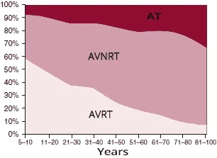
- SVT kịch phát chủ yếu gặp ở nữ giới
- Bất kỳ SVT nào cũng có thể có tính kịch phát
- Thuật ngữ SVT kịch phát chỉ bao gồm:
- AVNRT (60%)
- AVRT (30%)
- Nhịp nhanh nhĩ (10%)
- Các SVT kể trên thường giống nhau trên ECG
- Các SVT khác rất hiếm khi có tính kịch phát
- Trong phân loại rung nhĩ
- Người ta dùng thuật ngữ "rung nhĩ kịch phát"
- Chứ không phải SVT kịch phát
SVT không đều (chẩn đoán phân biệt)
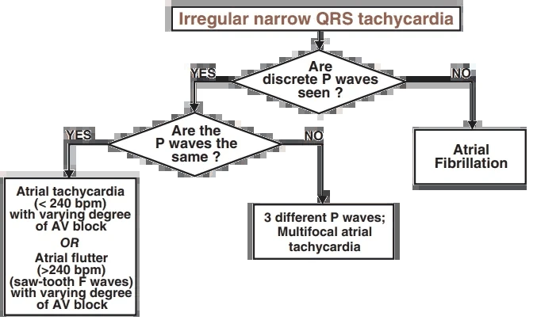
- Nhịp nhanh trên thất (SVT) được chia thành
- SVT không đều (chẩn đoán ECG đơn giản)
- SVT đều (chẩn đoán ECG phức tạp)
- Chẩn đoán phân biệt SVT dùng các lưu đồ chẩn đoán
- Các lưu đồ chẩn đoán cũng được dùng để chẩn đoán nhịp nhanh phức bộ giãn rộng
SVT không đều (chẩn đoán phân biệt)
- Nhịp nhanh nhĩ
- Xung động xuất phát từ một ổ đơn độc trong hai tâm nhĩ
- Ổ này phát xung động với tần số < 240/phút.
- Cuồng nhĩ
- Xung động quay vòng theo cơ chế vòng vào lại lớn trong hai tâm nhĩ với tần số > 240/phút. (thường gặp nhất là 300/phút.)
- Do đó tần số sóng P > 240/phút. (trên ECG thấy các sóng răng cưa đặc trưng)
- Xung động đi xuống hai tâm thất qua bộ nối nhĩ thất, nơi có thể blốc xung động một cách không đều
- Kết quả là đáp ứng thất (QRS) không đều
(dẫn truyền nhĩ thất thay đổi)
- Kết quả là đáp ứng thất (QRS) không đều
Rung nhĩ
- SVT không đều (phức bộ QRS không đều)
- KHÔNG có sóng P (thay vào đó là các sóng rung nhĩ)
- Xung động xuất phát từ nhiều ổ trong hai tâm nhĩ với tần số: 350-600/phút.
- Bộ nối nhĩ thất đóng vai trò bộ lọc (không phải xung động nào cũng xuống được tâm thất)
- Các xung động không tạo ra sóng P, còn xung động nào xuống được tâm thất thì tạo ra QRS
- Cơ chế là vòng vào lại nhỏ (thường gặp nhất)
- Rung nhĩ
- Trên ECG, không có sóng P và phức bộ QRS không đều một cách không đều
Nhịp nhanh nhĩ đa ổ
- SVT không đều
- Có ba sóng P khác nhau
- Xung động xuất phát từ ít nhất 3 ổ khác nhau trong hai tâm nhĩ
- Mỗi xung động tạo một sóng P, rồi đi xuống hai tâm thất (QRS)
- Mỗi ổ (xung động) tạo ra một sóng P riêng biệt (hướng vectơ khác nhau)
- Mỗi xung động tạo một sóng P, rồi đi xuống hai tâm thất (QRS)
- Cơ chế là tăng tính tự động (thường gặp nhất)
- Nhịp nhanh nhĩ đa ổ
- Trên ECG có 3 sóng P với hình dạng khác nhau
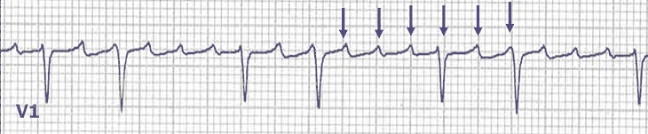
Cuồng nhĩ
- SVT không đều
- Sóng răng cưa với tần số 300/phút (> 240/phút.)
- Xung động quay vòng trong nhĩ phải (thường quanh vùng eo với tần số 300/phút)
- Mỗi vòng quay trong tâm nhĩ tạo ra một xung động dạng "răng cưa"
- Bộ nối nhĩ thất đóng vai trò bộ lọc (không phải xung động nào cũng xuống được tâm thất)
- Xung động xuống tâm thất theo tỷ lệ mỗi hai, mỗi ba… vòng quay
- Cơ chế là vòng vào lại lớn (thường gặp nhất)
- Cuồng nhĩ
- Trên ECG, xung động nhĩ tạo ra các sóng răng cưa đặc trưng
- Không phải xung động nào cũng đi qua bộ nối nhĩ thất xuống tâm thất
- (Trên ECG là cuồng nhĩ với blốc nhĩ thất thay đổi 2:1 và 4:1)
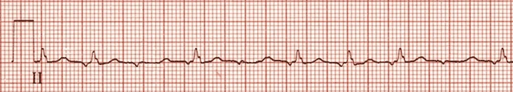
Nhịp nhanh nhĩ
- ECG này cho thấy blốc nhĩ thất từng lúc
- Vì vậy phức bộ QRS không nằm trong khoảng tần số nhịp nhanh (> 100/phút)
- Có sóng P với tần số 125/phút (< 240/phút)
- Nếu một số sóng P bị blốc, sẽ tạo ra một SVT không đều
- Tuy nhiên điều này rất hiếm gặp trong nhịp nhanh nhĩ
- Nếu một số sóng P bị blốc, sẽ tạo ra một SVT không đều
- Xung động xuất phát từ một ổ ngoại vị đơn độc trong tâm nhĩ (ngoài nút xoang)
- Mỗi xung động tạo một sóng P, rồi đi xuống hai tâm thất (QRS)
- Sóng P từ ổ ngoại vị khác với sóng P từ nút xoang (có vectơ khác)
- Mỗi xung động tạo một sóng P, rồi đi xuống hai tâm thất (QRS)
- Cơ chế là tăng tính tự động (thường gặp nhất)
- Nhịp nhanh nhĩ
- Trên ECG thấy sóng P (khác với sóng P xoang)
SVT đều (chẩn đoán phân biệt)
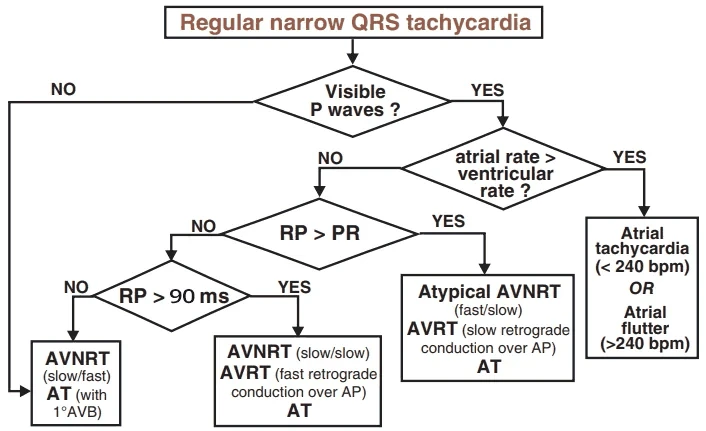
- Chẩn đoán SVT đều phức tạp hơn
- Thường phải làm thăm dò điện sinh lý mới có chẩn đoán xác định
- Để chẩn đoán SVT đều, lý tưởng nhất là:
- Có các ECG cũ với nhịp xoang (không có SVT)
- Trong nhịp xoang, tìm sóng delta (sóng delta liên quan đến AVRT)
- Có ECG ghi được thời điểm bắt đầu và kết thúc cơn SVT
- Để xác định SVT có tính kịch phát hay không
- Quan sát đáp ứng của SVT đều với xoa xoang cảnh và Adenosine
- Có các ECG cũ với nhịp xoang (không có SVT)
SVT đều (chẩn đoán phân biệt)
- Trong chẩn đoán phân biệt SVT đều
- Đánh giá khoảng RP và khoảng PR
Khoảng RP và khoảng PR
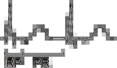
- Được đánh giá khi dẫn truyền xuống thất theo tỷ lệ 1:1 (P:QRS)
- Khoảng RP (đầu QRS – đầu sóng P)
- Khoảng PR (đầu sóng P – đầu QRS)
- Hai khoảng này được dùng để chẩn đoán phân biệt SVT đều
- SVT với khoảng RP ngắn (RP < PR)
- SVT với khoảng RP dài (RP > PR)
SVT với khoảng RP ngắn (RP < PR)
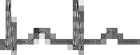
- Được gọi là nhịp nhanh RP ngắn (short RP tachycardia)
- Cũng bao gồm cả SVT đều không có sóng P
- Trong chẩn đoán phân biệt còn đo cả độ dài của khoảng RP
- Ngưỡng là 90ms
Không có sóng P
- AVNRT điển hình (slow-fast)
- Nhịp nhanh nhĩ kèm blốc nhĩ thất độ I
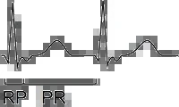
RP < 90ms
- AVNRT điển hình (slow-fast)
- Nhịp nhanh nhĩ kèm blốc nhĩ thất độ I
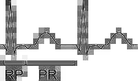
RP > 90ms
- AVNRT hiếm gặp (slow-slow)
- AVRT chiều xuôi (orthodromic AVRT)
- Nhịp nhanh nhĩ
SVT với khoảng RP dài (RP > PR)
- Được gọi là nhịp nhanh RP dài (long RP tachycardia)
RP > PR
- AVNRT không điển hình (fast-slow)
- Nhịp nhanh bộ nối vào lại vĩnh viễn (PJRT)
- Nhịp nhanh nhĩ
- Vị trí của ổ ngoại vị (so với bộ nối nhĩ thất) quyết định độ dài khoảng RP
- Vì vậy nhịp nhanh nhĩ có thể có khoảng RP dài ngắn thay đổi
Xoa xoang cảnh
- Làm chậm tính tự động của hai tâm nhĩ (không tác động lên vòng vào lại trong nhĩ)
- Làm chậm tần số sóng P (và QRS) trong
- Nhịp nhanh xoang
- Nhịp nhanh nhĩ
- Làm chậm dẫn truyền xung động qua bộ nối nhĩ thất
- Gây blốc nhĩ thất (làm tăng tỷ lệ dẫn truyền xuống thất: 2:1, 3:1, 4:1…)
- Bộc lộ hoạt động nhĩ (sóng P, sóng cuồng nhĩ) đang bị che khuất trong phức bộ QRS
- Cắt được SVT có cơ chế vòng vào lại
- Kéo dài dẫn truyền qua bộ nối nhĩ thất (thời kỳ trơ) làm vòng vào lại bị cắt đứt
- Cắt được SVT đều do vòng vào lại:
- AVRT
- AVNRT
- Đáp ứng của SVT với xoa xoang cảnh chỉ khoảng 10%
- (Do kỹ thuật xoa không đúng, bệnh nhân béo phì, kinh nghiệm của thầy thuốc…)
- Có tác dụng tương tự xoa xoang cảnh là adenosine
- Đáp ứng của SVT với adenosine là 90%
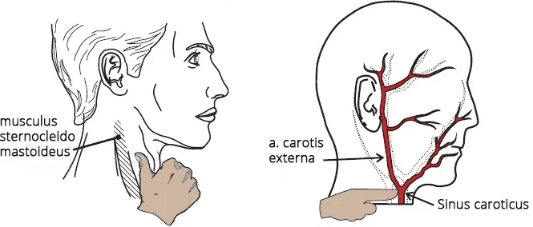
Kỹ thuật xoa xoang cảnh
- Xoang cảnh
- Nằm ở chỗ chia đôi của động mạch cảnh chung
- Là một thụ thể áp lực tham gia điều hòa huyết áp
- Khi bị kích thích sẽ hoạt hóa dây thần kinh lang thang (gây nhịp chậm và tụt huyết áp)
- Cũng nhạy cảm với áp lực từ bên ngoài (xoa ở cổ)
- Vị trí xoang cảnh
- Nằm trước cơ ức đòn chũm (musculus sternocleidomastoideus)
- Ở ngang mức bờ trên sụn giáp
- Sờ thấy mạch đập của động mạch cảnh
- Kỹ thuật xoa
- Xoa theo động tác xoay tròn (10-20 giây) với lực ép "vừa phải"
- Đáp ứng của SVT thường xuất hiện sau 5 giây
- Nếu không thành công, lặp lại động tác xoa ở bên cổ đối diện
- Luôn chỉ xoa một bên cổ (không bao giờ xoa hai bên cùng lúc)
- Trong khi xoa, ghi ECG liên tục
- Điều quan trọng là ghi nhận cách cơn SVT kết thúc (bằng sóng P hay phức bộ QRS?)
- Xoa theo động tác xoay tròn (10-20 giây) với lực ép "vừa phải"
- Không được xoa nếu
- Có tiếng thổi trên động mạch cảnh
- Nhất là ở người lớn tuổi, có nguy cơ đột quỵ nếu mảng xơ vữa bong ra
- Nghi ngờ xoang cảnh tăng nhạy cảm
- Nguy cơ ngừng tim
- Có tiếng thổi trên động mạch cảnh
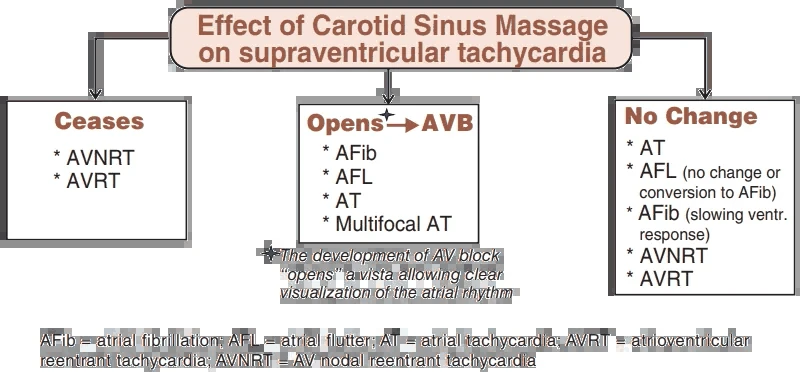
- Đáp ứng của SVT với xoa xoang cảnh chỉ khoảng 10%
- Vì vậy ở một số SVT, thủ thuật này thường không gây thay đổi gì
- (Do kỹ thuật xoa không đúng, bệnh nhân béo phì, kinh nghiệm của thầy thuốc, v.v.)
- Adenosine có tác dụng tương tự xoa xoang cảnh
- Đáp ứng của SVT với adenosine là 90%
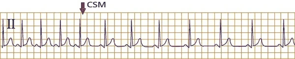
Xoa xoang cảnh làm chậm tần số tim
- Xoa xoang cảnh (CSM) làm chậm nút xoang và các ổ ngoại vị trong nhĩ trong các trường hợp:
- Nhịp nhanh xoang
- Nhịp nhanh nhĩ
- Sau CSM, tần số tim giảm xuống
- Điều này chỉ ra đây là nhịp nhanh xoang (ở nút xoang có tăng tính tự động)
- Sóng P ở chuyển đạo II có hình dạng bình thường
- Điều này chỉ ra đây là nhịp nhanh xoang (ở nút xoang có tăng tính tự động)
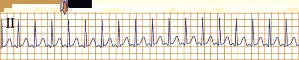
Xoa xoang cảnh không làm chậm tần số tim
- Xoa xoang cảnh (CSM)
- Không tác động lên vòng vào lại trong hai tâm nhĩ
- Chỉ cắt được vòng vào lại tại bộ nối nhĩ thất
- Tần số tim không giảm sau CSM
- Điều này chỉ ra đây là nhịp nhanh vào lại nút xoang nhĩ (tại nút xoang có vòng vào lại)
- Trên ECG, hình ảnh giống hệt nhịp nhanh xoang
- Khác biệt là nó không đáp ứng với CSM
- Điều này chỉ ra đây là nhịp nhanh vào lại nút xoang nhĩ (tại nút xoang có vòng vào lại)
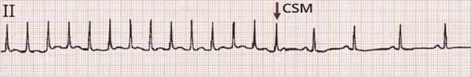
Xoa xoang cảnh cắt được cơn SVT
- Xoa xoang cảnh (CSM) cắt được các SVT có vòng vào lại tại bộ nối nhĩ thất:
- AVNRT
- AVRT
- Trên ECG, SVT không có sóng P
- Theo lưu đồ, có thể đây là AVNRT điển hình
- Sau CSM, cơn SVT đã được cắt
- Điều này chỉ ra AVNRT điển hình
- Sau phức bộ QRS cuối cùng của cơn SVT có một sóng P theo sau
- Bệnh nhân không có sóng delta khi ở nhịp xoang (sóng delta) (hội chứng WPW)
- Điều này chỉ ra AVNRT điển hình
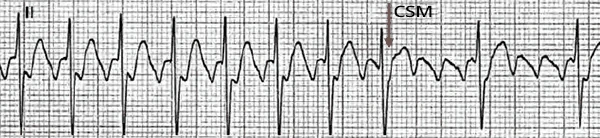
Xoa xoang cảnh làm tăng mức blốc nhĩ thất
- Xoa xoang cảnh (CSM) làm tăng mức blốc nhĩ thất trong các SVT:
- Rung nhĩ (thường là SVT không đều)
- Tuy nhiên khi tần số cao, rung nhĩ "gần như" là SVT đều
- Cuồng nhĩ (là SVT đều nếu có cùng một tỷ lệ dẫn truyền xuống thất)
- Nhịp nhanh nhĩ
- Nhịp nhanh nhĩ đa ổ (thường là SVT không đều)
- Tuy nhiên khi tần số cao, có thể "gần như" là SVT đều
- Rung nhĩ (thường là SVT không đều)
- Sau CSM, mức blốc nhĩ thất tăng lên
- Cuồng nhĩ với dẫn truyền (2:1) chuyển thành (4:1)
- Các sóng cuồng nhĩ được bộc lộ
- Cuồng nhĩ với dẫn truyền (2:1) chuyển thành (4:1)
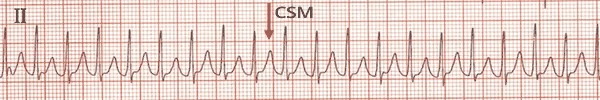
Xoa xoang cảnh không có tác dụng
- 10% SVT đáp ứng với xoa xoang cảnh (CSM)
- 90% SVT đáp ứng với adenosine
- SVT không thay đổi sau CSM
- Có thể là bất kỳ loại SVT đều nào
- Bệnh nhân này có sóng delta trên ECG khi ở nhịp xoang
- Điều này chỉ ra AVRT
Adenosine
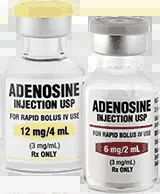
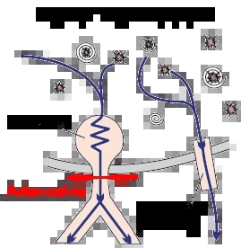
- Tác động lên tim tương tự xoa xoang cảnh
- Khác biệt nằm ở tỷ lệ đáp ứng của SVT
- Đáp ứng của SVT với
- Xoa xoang cảnh chỉ khoảng 10%
- Adenosine là 90%
- Liều adenosine
- Tiêm nhanh (trong vòng 2 giây) vào tĩnh mạch ngoại vi (i.v.)
- Tác dụng chỉ kéo dài 10 giây (thời gian bán hủy rất ngắn)
- Phác đồ liều (6mg → 1 phút → 12mg):
- Liều 1 khởi đầu là 6mg i.v.
- Nếu SVT không đáp ứng, tiêm liều 2: 12mg i.v. sau 1 phút
- Nếu SVT vẫn không đáp ứng, thì ngừng dùng adenosine
- Việc dùng liều thứ 3: 18mg i.v. còn nhiều tranh cãi
- Tiêm nhanh (trong vòng 2 giây) vào tĩnh mạch ngoại vi (i.v.)
- Chống chỉ định trong rung nhĩ kèm hội chứng WPW
- Adenosine blốc bộ nối nhĩ thất
- Khi đó toàn bộ xung động từ tâm nhĩ sẽ đi xuống tâm thất
- Qua đường dẫn truyền phụ (với tần số 350 - 600/phút.)
- Khi đó toàn bộ xung động từ tâm nhĩ sẽ đi xuống tâm thất
- Hậu quả là rung thất
- Adenosine blốc bộ nối nhĩ thất
Nghiệm pháp adenosine và hội chứng WPW
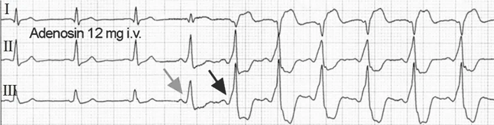
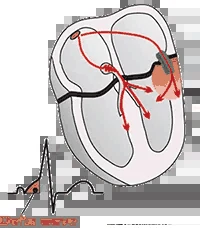
- Trong chẩn đoán phân biệt SVT đều
- Sự hiện diện của sóng delta trong nhịp xoang có ý nghĩa quan trọng
- Sóng delta trong nhịp xoang hầu như luôn chỉ ra AVRT
- 10% SVT có sóng delta trong nhịp xoang lại không phải AVRT
- Nếu đường dẫn truyền phụ không hoạt động (không tham gia vào cơ chế SVT), nó được gọi là bystander ("người quan sát")
- Không có sóng delta (trong nhịp xoang) không loại trừ được AVRT
- Vì có thể đó là sóng delta ẩn
- Nghiệm pháp adenosine được dùng để bộc lộ sóng delta ẩn
Nghiệm pháp adenosine và sóng delta
- Ban đầu là nhịp xoang không có sóng delta
- 12mg Adenosine i.v. blốc bộ nối nhĩ thất trong vài giây
- Xung động bắt đầu lan qua đường dẫn truyền phụ lên hai tâm nhĩ
- Trên ECG xuất hiện sóng delta (mũi tên đen) – hội chứng WPW
- Bệnh nhân có đường dẫn truyền phụ ẩn (không hoạt động) trong nhịp xoang
- Nếu bệnh nhân có SVT đều
- Thì gần như chắc chắn đó là AVRT chiều xuôi (orthodromic AVRT)
Cách cắt cơn SVT đều (bằng sóng P hay QRS?)
- Xoa xoang cảnh (và adenosine)
- Cắt được SVT có vòng vào lại tại bộ nối nhĩ thất (AVRT, AVNRT)
- Ghi ECG liên tục để ghi lại được thời điểm cơn SVT kết thúc
- Giúp ích cho chẩn đoán phân biệt SVT
- Cơn SVT kết thúc bằng sóng P (sau phức bộ QRS cuối cùng):
- AVRT chiều xuôi (orthodromic AVRT)
- AVNRT điển hình (slow-fast)
- Nhịp nhanh nhĩ (rất hiếm)
- Cơn SVT kết thúc bằng phức bộ QRS:
- Nhịp nhanh nhĩ
- AVNRT không điển hình (fast-slow)
- Nhịp nhanh bộ nối vào lại vĩnh viễn (PJRT)
- Nếu cơn SVT vẫn tiếp diễn sau khi xoa xoang cảnh (sau adenosine)
- Thì AVNRT và AVRT rất ít khả năng
SVT đều
- Luân phiên biên độ QRS (QRS alternans – biên độ phức bộ QRS thay đổi)
- Khoảng RP > 90ms (bề rộng khoảng RP được ước lượng theo bề rộng QRS, không cần đếm ô ECG)
- Điều này gợi ý (AVNRT hiếm gặp, AVRT, nhịp nhanh nhĩ)?
- Sau xoa xoang cảnh, cơn nhịp nhanh kết thúc bằng một sóng P
- Điều này gợi ý AVRT
- Bệnh nhân có đường dẫn truyền phụ ẩn (hội chứng WPW) phát hiện khi thăm dò điện sinh lý
- ECG cho thấy AVRT chiều xuôi (orthodromic AVRT)
SVT đều
- RP > PR
- Điều này gợi ý (AVNRT không điển hình, PJRT, nhịp nhanh nhĩ)?
- Sau xoa xoang cảnh, cơn nhịp nhanh kết thúc bằng một phức bộ QRS
- Vẫn có thể là bất kỳ loại nào trong 3 SVT nêu trên
- Sau đó cơn SVT tái phát (đây là một trẻ 1 tuổi)
- Điều này gợi ý nhịp nhanh bộ nối vào lại vĩnh viễn (PJRT)
Lưu đồ chẩn đoán SVT đầy đủ
- Lưu đồ đầy đủ để chẩn đoán phân biệt SVT
(cả SVT không đều và SVT đều) - Lưu đồ này chẩn đoán SVT dựa trên ECG ghi trong cơn SVT
- Không đánh giá đáp ứng của SVT: với xoa xoang cảnh, adenosine, cách kết thúc cơn SVT (bằng sóng P hay QRS?)
- Lưu đồ thường không đủ và chẩn đoán phân biệt cần thêm
- ECG ở nhịp xoang (có sóng delta hay không)
- Đáp ứng của SVT với xoa xoang cảnh (adenosine)
- Thăm dò điện sinh lý
- Khó phân biệt nhất là các SVT đều:
- AVNRT
- AVRT
- Nhịp nhanh nhĩ
- PJRT
SVT với khoảng RP ngắn (không có sóng P)
- Không có sóng P
- Theo lưu đồ, đây là AVNRT điển hình (slow-fast)
- (Nhịp nhanh với khoảng RP ngắn)
- AVNRT điển hình tạo ra
- Sóng r' giả (V1) sau QRS (mũi tên)
- Sóng s giả (II, III, aVF)
Sóng r' giả (V1) trong AVNRT
- Chỉ ra AVNRT điển hình (slow-fast)
- Xuất hiện do sóng P ngược chiều (P')
- Sóng P ngược chiều tạo ra
- Sóng s' giả ở các chuyển đạo dưới
- Sóng P ngược chiều tạo ra
Nhịp xoang
- Đây là ECG của bệnh nhân ở phần trước
- Trong nhịp xoang
- Không có sóng r' giả ở V1
- AVNRT đã được cắt bằng xoa xoang cảnh (adenosine)
SVT với khoảng RP dài (RP > PR)
- Bệnh nhân là phụ nữ 30 tuổi đến khám vì hồi hộp trống ngực
- Theo lưu đồ, đây là SVT với khoảng RP dài (RP > PR):
- AVNRT không điển hình (fast-slow)
- PJRT
- Nhịp nhanh nhĩ (với ổ ngoại vị ở vùng vách)
- Sau khi tiêm adenosine 6mg i.v., bệnh nhân chuyển về nhịp xoang
- Nhịp xoang duy trì được
- Đây không phải PJRT
- PJRT điển hình xảy ra ở trẻ dưới 1 tuổi
- Và tái phát sau khi chuyển về nhịp xoang
- Đây không phải nhịp nhanh nhĩ
- Nhịp nhanh nhĩ không cắt được bằng adenosine
- Đây là AVNRT không điển hình (fast-slow)
- Sóng P ngược chiều sau QRS (II, III, aVF)
- Sóng P sau QRS (aVR)
SVT với khoảng RP ngắn (RP > 90ms)
- Theo lưu đồ, SVT với khoảng RP ngắn và RP > 90ms gồm:
- AVNRT hiếm gặp (slow-slow)
- AVRT chiều xuôi (orthodromic AVRT)
- Nhịp nhanh nhĩ
- Sau xoa xoang cảnh, bệnh nhân chuyển về nhịp xoang
- Bệnh nhân có sóng delta (gợi ý AVRT)
- Đây là AVRT chiều xuôi (orthodromic AVRT)
- Sóng P ngược chiều sau QRS (II, III, aVF)
- Sóng P sau QRS (aVR)
- Sóng delta trong nhịp xoang
SVT với khoảng RP dài (RP > PR) — nhịp nhanh nhĩ
- Theo lưu đồ, SVT với khoảng RP dài (RP > PR) gồm:
- AVNRT không điển hình (fast-slow)
- PJRT
- Nhịp nhanh nhĩ
- SVT không đáp ứng với adenosine
- Điều này loại trừ các cơ chế vòng vào lại đi qua bộ nối nhĩ thất (AVNRT, PJRT)
- Ngoài ra, các SVT nêu trên thường có tần số tim > 150/phút.
- Điều này loại trừ các cơ chế vòng vào lại đi qua bộ nối nhĩ thất (AVNRT, PJRT)
- Đây là nhịp nhanh nhĩ
SVT với khoảng RP dài (RP > PR) — PJRT
- Hai nhát đầu tiên là nhịp xoang, sau đó cơn SVT bắt đầu (không có ngoại tâm thu)
- AVNRT và AVRT thường khởi phát bằng ngoại tâm thu
- Theo lưu đồ, SVT với khoảng RP dài (RP > PR) gồm:
- AVNRT không điển hình (fast-slow)
- PJRT (có dẫn truyền chậm qua đường dẫn truyền phụ)
- Nhịp nhanh nhĩ
- SVT đáp ứng với adenosine
- Tuy nhiên, sau khi chuyển về nhịp xoang,
cơn SVT tái phát- Điều này chỉ ra PJRT
- Tuy nhiên, sau khi chuyển về nhịp xoang,
- Đặc điểm của nhịp nhanh bộ nối vào lại vĩnh viễn (PJRT) gồm:
- Tần số tim: 120-200/phút.
- Chủ yếu gặp ở trẻ em (dưới 1 tuổi)
- Cơn PJRT khởi phát không cần ngoại tâm thu
- Đáp ứng với adenosine
- Nhưng thường tái phát sau khi chuyển về nhịp xoang
- Chẩn đoán xác định thường dựa vào thăm dò điện sinh lý
17.2. Rung nhĩ – ECG
Rung nhĩ (atrial fibrillation – AF hoặc A-fib)
Rung nhĩ và đột quỵ
- Rung nhĩ (AF) là rối loạn nhịp thường gặp nhất, với tần suất:
- Khoảng 50.000 người ở Slovakia
- Khoảng 4,5 triệu người ở Liên minh châu Âu
- Mỗi năm, 400 người ở Slovakia bị đột quỵ
- 80 ca đột quỵ mỗi năm ở Slovakia là do rung nhĩ gây ra
- Trong rung nhĩ, hai tâm nhĩ "rung lên" với tần số 350-600/phút.
- Máu ứ đọng trong hai tâm nhĩ và tạo thành huyết khối
- Thường gặp nhất ở tiểu nhĩ trái
- Huyết khối có thể bong ra (huyết khối bong ra = cục thuyên tắc)
- Và di chuyển lên não (nơi nó làm hẹp một mạch máu)
- Vì vậy bệnh nhân rung nhĩ có thể bị đột quỵ do huyết khối thuyên tắc
- Cuồng nhĩ có cùng cơ chế
- Máu ứ đọng trong hai tâm nhĩ và tạo thành huyết khối
- Nguy cơ hình thành huyết khối là như nhau bất kể thời gian rung nhĩ kéo dài bao lâu
- Không quan trọng bệnh nhân đã rung nhĩ 7 ngày hay 3 tháng
- Bệnh nhân rung nhĩ im lặng (không triệu chứng) có nguy cơ cao hơn
- Vì bệnh nhân không cảm nhận được
- Vòng xoắn bệnh lý
- Rung nhĩ gây tái cấu trúc cả về cấu trúc lẫn điện học của hai tâm nhĩ
- Và như vậy lại tạo ra nền cho rung nhĩ
Hai tâm nhĩ và rung nhĩ
- Rung nhĩ thường gặp nhất ở:
- Hai tâm nhĩ biến đổi về cấu trúc (thiếu máu cục bộ ở tâm nhĩ)
- Hai tâm nhĩ biến đổi về điện học (thay đổi điện thế hoạt động)
- Các nguyên nhân thường gặp nhất gây tái cấu trúc nhĩ:
- Bệnh tim thiếu máu cục bộ
- Tăng huyết áp động mạch
- Bệnh van tim
- Rối loạn điện giải
- Hạ kali máu
- Hạ magie máu
- Nhiễm độc giáp
- Thuyên tắc phổi
- Viêm màng ngoài tim
- Bệnh cơ tim
- Nhiều loại thuốc (đặc biệt là thuốc chống loạn nhịp)
- Hai tâm nhĩ đã tái cấu trúc
- Tạo ra nền (môi trường) cho sự khởi phát và duy trì
- Hoạt động điện bất thường (điện thế hoạt động)
- Bất kỳ rối loạn nhịp trên thất nào cũng có thể xuất hiện
- Tạo ra nền (môi trường) cho sự khởi phát và duy trì
- Rung nhĩ vô căn
- Xảy ra ở hai tâm nhĩ không biến đổi, không rõ nguyên nhân (hiếm gặp)
Hoạt động nhĩ đa ổ trong rung nhĩ
- Rung nhĩ đòi hỏi:
- Nền bệnh lý (hai tâm nhĩ biến đổi về điện học hoặc cấu trúc) để duy trì hoạt động điện bất thường
- Yếu tố khởi kích (thường gặp nhất là ngoại tâm thu nhĩ)
- Rung nhĩ là hoạt động đa ổ trong hai tâm nhĩ
- Hai tâm nhĩ có nhiều ổ phát xung động độc lập với nhau
- Với tần số 350-600/phút., các xung động này vượt tần số nút xoang và "tắt" nút xoang (ức chế vượt tần số)
- Hai tâm nhĩ có nhiều ổ phát xung động độc lập với nhau
- Cơ chế của hoạt động nhĩ đa ổ trong rung nhĩ chưa chắc chắn; có 3 giả thuyết:
- Nhiều vòng vào lại nhỏ
- Ổ mẹ và các sóng khử cực lan tỏa
- Vòng vào lại mẹ và các sóng khử cực lan tỏa
Nhiều vòng vào lại nhỏ
- Trong hai tâm nhĩ có nhiều vòng vào lại nhỏ
- Chúng phát xung động độc lập với nhau với tần số 350-600/phút.
- Trong mỗi vòng vào lại, xung động quay vòng liên tục
- Có ít nhất 10 vòng vào lại nhỏ
- Chúng phát xung động độc lập với nhau với tần số 350-600/phút.
- Các vòng vào lại nhỏ
- Thường được khởi kích bởi ngoại tâm thu nhĩ
- Cần có nền bệnh lý (hai tâm nhĩ đã tái cấu trúc) để duy trì
- Nếu chỉ có 3 vòng vào lại nhỏ, sẽ xuất hiện nhịp nhanh nhĩ đa ổ
- Một vòng vào lại lớn đơn độc tạo ra cuồng nhĩ
Ổ khu trú và các sóng khử cực lan tỏa
- Trong tâm nhĩ có một ổ khu trú với tăng tính tự động
- Ổ này phát ra nhiều sóng khử cực, mỗi sóng lại khử cực hai tâm nhĩ
- Các sóng khử cực này có thể tạo ra các vòng vào lại nhỏ
- Yếu tố khởi kích thường gặp nhất vẫn là ngoại tâm thu nhĩ
- Hai tâm nhĩ có tần số 350-600/phút.
Vòng vào lại mẹ và các sóng khử cực lan tỏa
- Cơ chế giống như trên, nhưng trong hai tâm nhĩ có một vòng vào lại mẹ
- Từ vòng vào lại mẹ phát ra nhiều sóng khử cực, mỗi sóng lại khử cực hai tâm nhĩ
- Các sóng khử cực này cũng có thể tạo ra các vòng vào lại nhỏ
- Hai tâm nhĩ có tần số 350-600/phút.
- Một vòng vào lại nhỏ đơn độc tạo ra nhịp nhanh vào lại trong nhĩ
Cơ chế bảo vệ của nút nhĩ thất
- Xung động không thể xuống hai tâm thất với tần số 350-600/phút.
- Vì nút nhĩ thất lọc bớt chúng nhờ thời kỳ trơ
- Trong hội chứng WPW
- Có một đường dẫn truyền phụ (nối tâm nhĩ với tâm thất)
- Đường phụ này không có cơ chế bảo vệ như nút nhĩ thất
- Bệnh nhân có WPW kèm rung nhĩ
- Không được dùng thuốc làm chậm dẫn truyền qua nút nhĩ thất
- Xung động khi đó sẽ xuống hai tâm thất chỉ qua đường phụ
- Với tần số 350-600/phút.
- Hậu quả là rung thất
- Không được dùng thuốc làm chậm dẫn truyền qua nút nhĩ thất
- Có một đường dẫn truyền phụ (nối tâm nhĩ với tâm thất)
ECG và rung nhĩ
- Nhịp (khoảng RR) không đều một cách không đều
- Đường đẳng điện bị biến dạng
- Không có sóng P
- Hai tâm nhĩ với tần số 350-600/phút tạo ra cái gọi là sóng rung nhĩ (sóng f)
- Rung nhĩ đôi khi được phân loại theo biên độ sóng rung nhĩ (tương tự như rung thất) thành:
- Rung nhĩ sóng mịn – biên độ < 0,5mm
- Rung nhĩ sóng thô – biên độ > 0,5mm
- Phức bộ QRS hẹp (< 0,12s) (vì xung động xuống hai tâm thất qua nút nhĩ thất)
- Phức bộ QRS có thể giãn rộng do: (dẫn truyền lệch hướng)
- Hội chứng WPW (nếu hai tâm thất được khử cực qua đường dẫn truyền phụ)
- Blốc nhánh Tawara có sẵn (blốc nhánh phải, blốc nhánh trái)
- Blốc nhánh Tawara chức năng xảy ra khi nhịp nhanh do (hiện tượng Ashman)
- Phức bộ QRS có thể giãn rộng do: (dẫn truyền lệch hướng)
Rung nhĩ
- Tần số tim không đều một cách không đều
(các khoảng RR dài ngắn khác nhau) - Phức bộ QRS hẹp (< 0,12s) vì hai tâm thất được khử cực qua nút nhĩ thất và hệ thống dẫn truyền còn nguyên vẹn
- Đường đẳng điện bị biến dạng – không phân biệt được sóng P
- Đây là rung nhĩ sóng thô vì biên độ dao động của đường đẳng điện > 0,5mm
Cách tính tần số
- Với nhịp tim không đều, dùng phương pháp 6 giây để tính tần số
- Đây là tần số trung bình của phức bộ QRS trong 6 giây (30 ô lớn)
- Tần số = số phức bộ QRS trong 6s × 10
Rung nhĩ với tần số 130/phút.
- Rung nhĩ
- Số phức bộ QRS trong 6s (30 ô lớn) là 13
- 13 × 10 = 130/phút.
Hiện tượng Ashman
- Khi khoảng RR kéo dài, thời kỳ trơ của hệ thống dẫn truyền cũng kéo dài theo
- Hiện tượng Ashman là một dạng dẫn truyền lệch hướng xảy ra khi một khoảng RR dài được tiếp nối bởi một khoảng RR ngắn
- Khoảng RR ngắn có thời kỳ trơ kéo dài
- Do thời kỳ trơ chưa kịp rút ngắn lại sau khoảng RR dài trước đó
- Khoảng RR ngắn có thời kỳ trơ kéo dài
- Đúng là nhánh Tawara phải (RTB) có thời kỳ trơ dài hơn so với nhánh Tawara trái (LTB)
- Nếu một xung động đi qua nút nhĩ thất xuống hai tâm thất vào lúc
- Nhánh Tawara phải đang trong thời kỳ trơ
- Thì kết quả là một blốc nhánh Tawara phải chức năng
- Blốc chức năng nói trên thường gặp nhất trong rung nhĩ
- Khi sau một khoảng RR dài là một khoảng RR ngắn với phức bộ QRS (mang hình dạng blốc nhánh phải)
Hiện tượng Ashman và rung nhĩ
- Trên ECG, thấy rung nhĩ ở chuyển đạo V1 với chuẩn đo 10mm
- Ban đầu các khoảng RR tương đối đều nhau
- Sau đó xuất hiện kiểu khoảng RR dài – ngắn
- Khoảng RR dài làm kéo dài thời kỳ trơ
- Khoảng RR ngắn kết thúc bằng một nhát dẫn truyền lệch hướng mang hình dạng blốc nhánh Tawara phải (RTB)
- Xung động của khoảng RR ngắn đi qua nhánh phải trong thời kỳ trơ nên bị blốc
- Hiện tượng Ashman thường gặp nhất trong rung nhĩ
- Khi các khoảng RR thay đổi một cách không đều
Dẫn truyền ẩn
- Sơ đồ bậc thang (laddergram) minh họa đường đi của xung động trong hệ thống dẫn truyền
- A – tâm nhĩ, AV – nút nhĩ thất, V – tâm thất
- Trong rung nhĩ (AF), nút nhĩ thất bị các xung động từ tâm nhĩ dội vào một cách không đều với tần số 350-600/phút.
- Khi xung động đi vào một phần nút nhĩ thất, chúng làm thay đổi tính chất điện học của nút
- Nút nhĩ thất khi đó thay đổi tốc độ dẫn truyền của xung động kế tiếp (dẫn truyền ẩn)
- Kết quả là đáp ứng thất (QRS) hoàn toàn không đều một cách không đều
Phân loại rung nhĩ theo tần số
- Nút nhĩ thất thường dẫn xung động xuống hai tâm thất với tần số 110-160/phút.
- Dựa vào tần số thất (phức bộ QRS), rung nhĩ được phân thành:
- Đáp ứng thất chậm (tần số < 60/phút.)
- Gặp trong: hạ thân nhiệt, ngộ độc digoxin, hội chứng suy nút xoang, và do một số thuốc
- Đáp ứng thất bình thường (tần số 60-100/phút.)
- Đáp ứng thất nhanh (tần số > 100/phút.)
- Đáp ứng thất chậm (tần số < 60/phút.)
Chẩn đoán phân biệt rung nhĩ
- Rung nhĩ là một rối loạn nhịp trên thất
- Trên ECG, nó thường giống với:
- Cuồng nhĩ (với dẫn truyền xuống thất thay đổi)
- Nhịp nhanh nhĩ đa ổ
- Trên ECG, nó thường giống với:
- Chẩn đoán phân biệt các rối loạn nhịp trên thất
Rung nhĩ — cơ chế và ECG
- Trong hai tâm nhĩ có nhiều vòng vào lại nhỏ
- Chúng phát xung động độc lập với nhau với tần số 350-600/phút
- Nhịp tim không đều một cách không đều (các khoảng RR dài ngắn khác nhau)
- Sóng rung nhĩ f (đường đẳng điện biến dạng, không có sóng P)
- Không phân biệt được sóng P
Cuồng nhĩ với dẫn truyền thay đổi (2:1 và 4:1)
- Cuồng nhĩ
- Có một vòng vào lại lớn quanh toàn bộ nhĩ phải
- Xung động quay vòng trong vòng vào lại lớn với tần số 300/phút
- Thay cho sóng P, trên ECG thấy các sóng cuồng nhĩ (sóng F) dạng răng cưa với tần số 300/phút
- Nhịp tim không đều một cách đều đặn
(regularly irregular)- Một khoảng RR có tỷ lệ dẫn truyền xuống thất 2:1
- Khoảng RR tiếp theo có tỷ lệ dẫn truyền xuống thất 4:1
Nhịp nhanh nhĩ đa ổ
- Nhịp nhanh nhĩ đa ổ
- Có 3 ổ ngoại vị trong hai tâm nhĩ phát xung động độc lập với nhau
- Trên ECG có 3 sóng P khác nhau
- ECG cho thấy 3 sóng P với hình dạng khác nhau (mỗi ổ tạo ra một sóng P riêng)
- Nhịp tim không đều một cách không đều (giống rung nhĩ)
- Vì các ổ ngoại vị phát xung động (sóng P) độc lập với nhau
- Tuy nhiên, mỗi sóng P đều được theo sau bởi một phức bộ QRS
Phân loại rung nhĩ
- Rung nhĩ được phân loại theo thời gian kéo dài
- Ngoài ECG thường quy, để phân loại còn dùng thêm:
- Holter ECG 24 giờ (ghi ECG trong 24 giờ, đôi khi 48 giờ)
- Máy ghi ECG cấy dưới da (ghi ECG khoảng 30 ngày)
- Quy tắc 30 giây
- Rung nhĩ (AF) phải kéo dài ít nhất 30 giây
- Nếu rung nhĩ kéo dài dưới 30 giây, bệnh nhân không được chẩn đoán là rung nhĩ
- Mặc dù về bản chất đó vẫn là rung nhĩ
- Đây là một đồng thuận, vì người ta cho rằng các cơn rung nhĩ ngắn dưới 30 giây không tạo huyết khối?
- Rung nhĩ kịch phát
- Một cơn rung nhĩ kéo dài ít nhất 30 giây và dưới 7 ngày
- Tự chấm dứt (không cần điều trị)
- Các cơn có thể tái phát, và bệnh nhân có thể có:
- Cơn rung nhĩ thứ 3
- Cơn rung nhĩ thứ 4, v.v.
- Nếu rung nhĩ kéo dài trên 48 giờ, sẽ xảy ra tái cấu trúc nhĩ
- Và khả năng rung nhĩ tự chấm dứt là thấp
- Rung nhĩ thường khởi đầu bằng các cơn kịch phát tái diễn rồi dần dần (nếu không điều trị) tiến triển thành:
- Rung nhĩ dai dẳng
- Rung nhĩ vĩnh viễn
- Rung nhĩ dai dẳng
- Một cơn rung nhĩ kéo dài trên 7 ngày
- Không tự chấm dứt
- Sau 7 ngày, hai tâm nhĩ đã tái cấu trúc và tạo nền cho việc duy trì rung nhĩ
- Khả năng tự chuyển về nhịp xoang gần như bằng không
- Muốn cắt cơn phải dùng thuốc hoặc sốc điện chuyển nhịp (sốc điện)
- Rung nhĩ dai dẳng kéo dài
- Một cơn kéo dài trên một năm
- Nhưng vẫn còn cơ hội cắt cơn, chẳng hạn bằng triệt đốt bằng điện
- Thăm dò điện sinh lý phát hiện các vòng vào lại nhỏ rồi "đốt bỏ" chúng (triệt đốt)
- Rung nhĩ vĩnh viễn
- Rung nhĩ kéo dài trên một năm
- Được cả thầy thuốc lẫn bệnh nhân chấp nhận, và không còn kế hoạch chuyển về nhịp xoang
- Thuốc được dùng để kiểm soát đáp ứng thất (tần số phức bộ QRS)
- Với hai tâm nhĩ đã tái cấu trúc, khả năng duy trì nhịp xoang gần như bằng không
- Vì vậy bệnh nhân được để nguyên trong rung nhĩ, và thuốc chỉ kiểm soát đáp ứng thất
- Ngoài thời gian kéo dài, rung nhĩ (AF) còn có thể được phân loại theo các tiêu chí sau:
- Rung nhĩ mới chẩn đoán
- Rung nhĩ được ghi nhận một lần trên ECG
- Đôi khi rung nhĩ được chẩn đoán tình cờ khi khám sức khỏe định kỳ
- Rung nhĩ im lặng là rung nhĩ không có triệu chứng (bệnh nhân không cảm nhận được)
- Rung nhĩ im lặng
- Là rung nhĩ không triệu chứng
- Bệnh nhân không cảm nhận được; đây là thể rất nguy hiểm vì thường không được điều trị
- Rung nhĩ đơn độc (lone AF)
- Chiếm 20% tổng số ca rung nhĩ
- Đôi khi được gọi là rung nhĩ vô căn (rung nhĩ không rõ nguồn gốc)
- Xảy ra ở hai tâm nhĩ bình thường về cấu trúc, không rõ nguyên nhân?
- Rung nhĩ không do bệnh van tim
- Rung nhĩ xảy ra ở quả tim không có:
- Bệnh van tim
- Van tim nhân tạo
- Rung nhĩ xảy ra ở quả tim không có:
- Rung nhĩ do bệnh van tim
- Rung nhĩ xảy ra ở quả tim có bệnh van tim hoặc có van tim nhân tạo
Rung nhĩ — sóng thô kèm dấu hiệu digoxin
- Nhịp tim không đều một cách không đều
- Ở V1 có các sóng rung nhĩ trông giống răng cưa, vốn là đặc trưng của cuồng nhĩ
- Đây không phải cuồng nhĩ
- Ở các chuyển đạo dưới (II, III và aVF) không có sóng răng cưa
- Cuồng nhĩ sẽ có nhịp không đều một cách đều đặn (hai khoảng RR khác nhau xen kẽ)
- ST chênh xuống hình lòng máng (ở II, III, aVF, V6) gợi ý bệnh nhân đang dùng digoxin, thuốc mà bệnh nhân rung nhĩ hay dùng
- Đây là rung nhĩ sóng thô
- Biên độ sóng rung nhĩ ở V1 > 0,5mm
Cuồng nhĩ (với dẫn truyền thay đổi 2:1 và 4:1)
- Nhịp tim không đều một cách đều đặn, với 2 khoảng RR xen kẽ nhau
- Một khoảng RR có dẫn truyền xuống thất 2:1
- Khoảng RR kia có dẫn truyền xuống thất 4:1
- Đây là cuồng nhĩ điển hình phụ thuộc eo (impulse quay ngược chiều kim đồng hồ trong nhĩ phải)
- Sóng cuồng nhĩ âm ở các chuyển đạo dưới (II, III, aVF) với tần số 300/phút.
- Sóng cuồng nhĩ dương ở V1 (trông giống sóng P)
- Dẫn truyền xuống thất xen kẽ giữa 2:1 và 4:1 (chú ý chuyển đạo II ghi liên tục)
- Khoảng RR với blốc 4:1 dài đúng gấp đôi khoảng RR với blốc 2:1
Rung nhĩ — sóng thô so với cuồng nhĩ
- Nhịp tim không đều một cách không đều
- Ở chuyển đạo V1 có các sóng rung nhĩ trông giống răng cưa, vốn cũng gặp trong cuồng nhĩ
- Đây không phải cuồng nhĩ
- Ở các chuyển đạo dưới (II, III, aVF) không có sóng răng cưa
- Cuồng nhĩ sẽ có nhịp không đều một cách đều đặn (hai khoảng RR khác nhau xen kẽ)
- Đây là rung nhĩ sóng thô
- Biên độ sóng rung nhĩ ở V1 > 0,5mm
Rung nhĩ — sóng mịn
- Nhịp tim không đều một cách không đều
- Có một đường đẳng điện giữa các phức bộ QRS
- Không phân biệt được sóng P, cũng không thấy sóng rung nhĩ hay sóng cuồng nhĩ (răng cưa)
- Đây là rung nhĩ sóng mịn
- Biên độ sóng rung nhĩ ở V1 < 0,5mm
- Chắc chắn đây không phải nhịp nhanh vào lại nút nhĩ thất (AVNRT) hay nhịp nhanh vào lại nhĩ thất (AVRT), vì các nhịp nhanh trên thất này có:
- Nhịp tim đều
- Tần số khoảng 170/phút
- Chẩn đoán phân biệt SVT
Nhịp nhanh nhĩ đa ổ — ECG ở bệnh nhân COPD
- Nhịp tim không đều một cách không đều
- Tần số: 120/phút (quy tắc 6 giây)
- Có ít nhất 3 sóng P với hình dạng khác nhau (đánh dấu bằng mũi tên xanh)
- ECG này chỉ hiển thị 3 chuyển đạo V1-V3 (ghi là C1-C3)
- Bệnh nhân có bệnh phổi tắc nghẽn mạn tính
- Nhịp nhanh nhĩ đa ổ rất thường gặp ở bệnh nhân có bệnh phổi
- Vốn có thể dẫn đến tăng áp phổi và quá tải tim phải (tái cấu trúc)
- Đây không phải rung nhĩ (mỗi phức bộ QRS đều có một sóng P đi trước)
Rung nhĩ — đáp ứng thất nhanh
- Nhịp tim không đều một cách không đều
- Tần số: 135/phút (quy tắc 6 giây)
- Đây là rung nhĩ với đáp ứng thất nhanh (tần số > 100/phút)
- Đây là rung nhĩ sóng thô
- Biên độ sóng rung nhĩ ở V1 > 0,5mm
- Chắc chắn đây không phải AVNRT hay AVRT, vì các nhịp nhanh trên thất này có
- Nhịp tim đều
- Tần số khoảng 170/phút
- Chẩn đoán phân biệt SVT
Rung nhĩ — đáp ứng thất chậm
- Nhịp tim không đều một cách không đều
- Đây là rung nhĩ với đáp ứng thất chậm
- Tần số < 60/phút (quy tắc 6 giây)
- Bệnh nhân nhiều khả năng đang dùng thuốc làm chậm dẫn truyền qua nút nhĩ thất
- Digoxin
- Thuốc chẹn beta
- Thuốc chẹn kênh canxi
- Hạ thân nhiệt cũng có thể làm chậm dẫn truyền nhĩ thất
- Đây là rung nhĩ sóng mịn
- Biên độ sóng rung nhĩ ở V1 < 0,5mm
- ST chênh xuống và sóng T âm ở các chuyển đạo bên (I, aVL, V5, V6) có thể liên quan đến
- Thiếu máu cục bộ
- Digoxin
Rung nhĩ và hiện tượng Ashman — dạng blốc nhánh phải
- Nhịp tim không đều một cách không đều
- Đây là rung nhĩ với đáp ứng thất chậm
- Tần số < 60/phút (quy tắc 6 giây)
- Bệnh nhân nhiều khả năng đang dùng thuốc làm chậm dẫn truyền qua nút nhĩ thất
- Digoxin
- Thuốc chẹn beta
- Thuốc chẹn kênh canxi
- Hạ thân nhiệt cũng có thể làm chậm dẫn truyền nhĩ thất
- Đây là rung nhĩ sóng mịn
- Biên độ sóng rung nhĩ ở V1 < 0,5mm
- Hiện tượng Ashman (chuyển đạo V5 ghi liên tục)
- Phức bộ QRS thứ 3 giãn rộng hơn và có sóng T âm
- Nút nhĩ thất đã dẫn một xung động nhĩ xuống hai tâm thất vào lúc nhánh phải đang trong thời kỳ trơ
- Nhánh phải blốc xung động này, tạo ra một phức bộ QRS có hình dạng giống:
- Blốc nhánh phải (RBBB)
- Đây không phải ngoại tâm thu thất, vốn rất ít khả năng xảy ra trong rung nhĩ
- Nhánh phải blốc xung động này, tạo ra một phức bộ QRS có hình dạng giống:
Rung nhĩ và hiện tượng Ashman — blốc phân nhánh trái trước
- Nhịp tim không đều một cách không đều
- Đây là rung nhĩ với đáp ứng thất nhanh
- Tần số > 100/phút (quy tắc 6 giây)
- Ở chuyển đạo II ghi liên tục, thấy một cặp khoảng RR dài – ngắn, theo sau là một phức bộ QRS khác dạng
- Đây là dẫn truyền lệch hướng (hiện tượng Ashman)
- Xung động được dẫn xuống hai tâm thất vào lúc một phần hệ thống dẫn truyền thất đang trong thời kỳ trơ
- Xung động bị blốc ở phần đó
- Thường gặp nhất là bị blốc ở nhánh phải
- Nhánh phải có thời kỳ trơ dài nhất
- Trên ECG này, 2 phức bộ QRS khác dạng lại mang hình ảnh blốc phân nhánh trái trước
- Vì xung động đã bị blốc ở phân nhánh trái trước
17.3. Cuồng nhĩ – ECG
Cuồng nhĩ (atrial flutter – AFL)
Vòng vào lại và nhịp nhanh trên thất
- Trong nhịp nhanh trên thất (SVT), xung động xuất phát từ hai tâm nhĩ hoặc từ bộ nối nhĩ thất
- Vòng vào lại là một trong các cơ chế gây nhịp nhanh
- Trong đó xung động quay vòng theo một vòng khép kín, thường là quanh một vật cản giải phẫu (sẹo)
- Nhịp nhanh vào lại nút xoang nhĩ
- Vòng vào lại nằm trong nút xoang
- Hoặc vòng vào lại đi qua nút xoang
- Nhịp nhanh vào lại trong nhĩ
- Vòng vào lại nằm ở đâu đó trong hai tâm nhĩ
- Thường gặp nhất là quanh một sẹo (sau nhồi máu cơ tim)
- Hoặc vòng vào lại xảy ra mà không có vật cản
- Vòng vào lại nằm ở đâu đó trong hai tâm nhĩ
- Nhịp nhanh vào lại nút nhĩ thất
- Vòng vào lại nằm trong nút nhĩ thất
- Nhịp nhanh vào lại nhĩ thất
- Đây là vòng vào lại lớn, xung động quay vòng giữa:
- Hai tâm nhĩ và hai tâm thất qua nút nhĩ thất và một đường dẫn truyền phụ
- Có 3 loại đường dẫn truyền phụ:
- Bó Kent (hội chứng WPW)
- Bó James (hội chứng LGL)
- Bó Mahaim (hội chứng Mahaim)
- Cuồng nhĩ
- Đây là vòng vào lại lớn, xung động quay vòng
- Quanh toàn bộ nhĩ phải (thường gặp nhất)
Giải phẫu nhĩ phải
- Eo van ba lá – tĩnh mạch chủ dưới (cavotricuspid isthmus)
- Isthmus (tiếng Hy Lạp nghĩa là "dải đất hẹp giữa biển")
- Vùng eo là một dải mô xơ hẹp ngăn cách:
- Lỗ đổ vào của tĩnh mạch chủ dưới (IVC) và
- Vòng van ba lá
- Trong cuồng nhĩ, nó tạo thành đoạn dẫn truyền chậm của vòng vào lại
- Vòng van ba lá
- Là một vòng xơ
- Tạo thành khung nâng đỡ cho van ba lá
- Mào tận cùng (crista terminalis – CT)
- Là một dải cơ hẹp
- Nằm giữa lỗ đổ vào của tĩnh mạch chủ trên và tĩnh mạch chủ dưới
- Ngăn cách tiểu nhĩ phải
- Là một dải cơ hẹp
- Tĩnh mạch chủ trên (SVC) là tĩnh mạch chủ phía trên
- Tĩnh mạch chủ dưới (IVC) là tĩnh mạch chủ phía dưới
- Xoang vành (CS)
- Là thân tĩnh mạch dẫn lưu chính của tim
- Đổ vào nhĩ phải
- Lỗ bầu dục (foramen ovale – FO)
- Là một lỗ trên vách liên nhĩ
- Trong thời kỳ bào thai, nó nối hai tâm nhĩ, về sau đóng lại
- Ở 20% dân số, lỗ này không đóng hoàn toàn nhưng thường không gây vấn đề gì
- Gờ Eustachi (eustachian ridge – ER)
- Gờ Eustachi hướng dòng máu từ tĩnh mạch chủ dưới về phía lỗ bầu dục trong thời kỳ bào thai
- Nó giúp máu giàu oxy đi thẳng vào vòng tuần hoàn
- Về sau gờ Eustachi thoái triển và chỉ còn để lại gờ Eustachi
Cuồng nhĩ
- Hầu như luôn xảy ra ở nhĩ phải đã biến đổi về cấu trúc
- P phế (phì đại nhĩ phải)
- Trong nhĩ phải có một vòng vào lại lớn
- Xung động quay vòng trong đó với tần số khoảng 300/phút (200 - 400/phút)
- Xung động đi qua nút nhĩ thất xuống hai tâm thất thường gặp nhất theo tỷ lệ 2:1
- Xung động quay hai vòng trong vòng vào lại lớn (trong nhĩ phải)
- Và xuống tâm thất một lần
- Hai tâm nhĩ đập với tần số 300/phút, còn hai tâm thất 150/phút
- Đây là cơ chế bảo vệ của nút nhĩ thất (nhờ thời kỳ trơ)
- Xung động quay hai vòng trong vòng vào lại lớn (trong nhĩ phải)
- Cuồng nhĩ với dẫn truyền 1:1 có thể xảy ra trong hội chứng WPW
- Nếu bệnh nhân được dùng thuốc làm chậm dẫn truyền qua nút nhĩ thất
- Xung động từ tâm nhĩ khi đó sẽ xuống hai tâm thất qua đường dẫn truyền phụ
- Vốn không có cơ chế bảo vệ như nút nhĩ thất
- Hai tâm thất được khử cực với tần số 300/phút và xảy ra rung thất
- Cuồng nhĩ và rung nhĩ
- Có thể gây đột quỵ do thuyên tắc
- Ở tần số nhĩ cao, máu ứ đọng trong hai tâm nhĩ
- Và hình thành huyết khối (cục máu đông)
- Cuồng nhĩ (300/phút – tần số nhĩ)
- Rung nhĩ (350-600/phút – tần số nhĩ)
- Ở tần số nhĩ cao, máu ứ đọng trong hai tâm nhĩ
- Có thể gây đột quỵ do thuyên tắc
Cuồng nhĩ điển hình (phụ thuộc eo)
Cuồng nhĩ điển hình, cuồng nhĩ ngược chiều kim đồng hồ
- Đôi khi được gọi là cuồng nhĩ type I
- Đây là thể cuồng nhĩ thường gặp nhất (90% các trường hợp)
- Vòng vào lại lớn đi qua eo van ba lá – tĩnh mạch chủ dưới
- Xung động quay vòng trong vòng vào lại với tần số 240-340/phút
- Xung động quay ngược chiều kim đồng hồ (anticlockwise re-entry)
- Trên ECG thấy các sóng răng cưa (sóng F) đặc trưng, thay cho sóng P
Cuồng nhĩ điển hình đảo ngược (phụ thuộc eo)
Cuồng nhĩ điển hình đảo ngược, cuồng nhĩ thuận chiều kim đồng hồ
- Đôi khi được gọi là cuồng nhĩ type I đảo ngược
- Rất hiếm gặp (< 10% các trường hợp)
- Vòng vào lại lớn đi qua eo van ba lá – tĩnh mạch chủ dưới
- Xung động quay vòng trong vòng vào lại với tần số 240-340/phút
- Xung động quay thuận chiều kim đồng hồ (clockwise re-entry)
- Trên ECG thấy các sóng răng cưa (sóng F) đặc trưng, thay cho sóng P
Cuồng nhĩ không điển hình (không phụ thuộc eo)
Cuồng nhĩ không phụ thuộc eo
- Đôi khi được gọi là cuồng nhĩ type II
- Rất hiếm gặp (< 5% các trường hợp)
- Vòng vào lại lớn không đi qua eo van ba lá – tĩnh mạch chủ dưới
- Vòng vào lại nằm ở nhĩ trái hoặc nhĩ phải
- Xung động quay vòng trong vòng vào lại với tần số 340-440/phút
- Vì vòng vào lại (không đi qua vùng eo) có chu vi nhỏ hơn, nên tần số cao hơn
- Vòng vào lại thường phát sinh
- Sau các phẫu thuật tim ở tâm nhĩ, quanh các sẹo
- Quanh các tĩnh mạch phổi và tĩnh mạch chủ
- Trên ECG thấy các sóng răng cưa (sóng F) đặc trưng thay cho sóng P
- Vị trí của vòng vào lại được xác định bằng thăm dò điện sinh lý
- Nếu trong tâm nhĩ xuất hiện vòng vào lại nhỏ, thì đó là nhịp nhanh vào lại trong nhĩ
- Khác biệt chính là vòng vào lại nhỏ không tạo ra sóng răng cưa (sóng F) trên ECG
- Cuồng nhĩ không điển hình không còn được phân loại theo chiều quay của xung động (thuận hay ngược chiều kim đồng hồ)
ECG và cuồng nhĩ
- Phức bộ QRS hẹp (vì xung động được dẫn xuống hai tâm thất qua nút nhĩ thất)
- Tần số nhĩ khoảng 300/phút
- Cuồng nhĩ phụ thuộc eo: 240-340/phút (90% các trường hợp)
- Cuồng nhĩ không phụ thuộc eo: 340-440/phút (< 10% các trường hợp)
- Ở các chuyển đạo dưới (II, III, aVF) có các "sóng răng cưa"
- Không thấy đường đẳng điện
- Sóng cuồng nhĩ (sóng F, sóng răng cưa) có thể trông giống sóng P ở V1
Sóng cuồng nhĩ (sóng F, sóng răng cưa) hình thành như thế nào
- Xung động quay vòng trong vòng vào lại lớn với tần số khoảng 300/phút
- Vì vậy, sóng cuồng nhĩ có tần số 300/phút
- Sóng răng cưa (sóng F) chỉ do cuồng nhĩ phụ thuộc eo tạo ra
- Vì vòng vào lại lớn bao trùm gần như toàn bộ nhĩ phải
- Xung động quay quanh nút nhĩ thất
- Nhờ vậy xung động đi gần như thẳng HƯỚNG VỀ hoặc THẲNG RA XA
- Các chuyển đạo dưới (II, III, aVF)
- Cuồng nhĩ không điển hình
- Có vòng vào lại lớn nhưng không đi qua vùng eo (quanh nút nhĩ thất)
- Vectơ của vòng vào lại không tạo ra sóng răng cưa
ECG và cuồng nhĩ điển hình (phụ thuộc eo)
- Đây là thể cuồng nhĩ thường gặp nhất (90% các trường hợp)
- Xung động quay vòng qua vùng eo, quanh nút nhĩ thất,
với tần số khoảng 300/phút - Xung động quay vòng theo hướng ĐI RA XA các chuyển đạo dưới
- Ở các chuyển đạo dưới (II, III, aVF)
- Xuất hiện sóng cuồng nhĩ âm (sóng răng cưa)
- Ở V1 xuất hiện sóng dương
- Vì chuyển đạo V1 "đối diện" với các chuyển đạo dưới
Cuồng nhĩ điển hình đảo ngược (phụ thuộc eo)
- Rất hiếm gặp (< 10% các trường hợp)
- Xung động quay vòng qua vùng eo, quanh nút nhĩ thất,
với tần số khoảng 300/phút. - Xung động quay vòng theo hướng đi lên ở các chuyển đạo dưới
- Vì vậy, ở các chuyển đạo dưới (II, III, aVF)
- Thấy sóng cuồng nhĩ dương (răng cưa)
- Ở V1 thấy sóng âm
- Vì chuyển đạo V1 "đối diện" với các chuyển đạo dưới
Dẫn truyền xuống hai tâm thất
- Cuồng nhĩ phụ thuộc eo có tần số vòng vào lại khoảng 300/phút.
- Nút nhĩ thất blốc bớt dẫn truyền xung động xuống hai tâm thất
- Đây là blốc chức năng – một cơ chế bảo vệ của nút nhĩ thất, giúp hai tâm thất tránh khỏi nhịp quá nhanh
- Đây không phải blốc nhĩ thất thực thể (do tổn thương nút nhĩ thất)
- Blốc nhĩ thất chức năng hay dẫn truyền xuống thất có thể ở nhiều mức độ khác nhau
- Tần số thất (QRS) trong cuồng nhĩ có tần số nhĩ 300/phút. sẽ phụ thuộc vào tỷ lệ dẫn truyền:
- Dẫn truyền 2:1 = tâm thất 150/phút.
- Dẫn truyền 3:1 = tâm thất 100/phút.
- Dẫn truyền 4:1 = tâm thất 75/phút.
- Cuồng nhĩ cũng có thể có blốc nhĩ thất (dẫn truyền xuống thất) thay đổi
- Trên ECG, biểu hiện là tỷ lệ dẫn truyền thay đổi 2:1, 3:1, 4:1
- Khi đó cuồng nhĩ trông giống rung nhĩ vì hoạt động tim (QRS) không đều
Cuồng nhĩ (3:1)
- Tần số: 140/phút.
- Tần số nhĩ: 280/phút.
- Tần số thất: 140/phút.
- Chú ý các sóng răng cưa đặc trưng
- Đây là cuồng nhĩ phụ thuộc eo (tần số 240-340/phút.)
Cuồng nhĩ (4:1)
- Tần số: 68/phút.
- Tần số nhĩ: 272/phút.
- Tần số thất: 68/phút.
- Lưu ý đây không phải blốc 3:1; blốc xuống thất là 4:1
- Chú ý các đỉnh của sóng cuồng nhĩ, hướng xuống dưới
- Đây cũng lại là cuồng nhĩ phụ thuộc eo (tần số 240-340/phút.)
Cuồng nhĩ (với blốc nhĩ thất thay đổi 2:1 và 4:1)
- Tần số (QRS): 90/phút. (phương pháp 6 giây)
- Tần số sóng cuồng nhĩ: 300/phút.
- Đây là cuồng nhĩ phụ thuộc eo (tần số 240-340/phút.)
- Tần số thất không đều một cách đều đặn. Nghĩa là 2 khoảng RR xen kẽ nhau
- Khoảng RR với blốc 2:1
- Khoảng RR với blốc 4:1
Cuồng nhĩ (với blốc nhĩ thất thay đổi 7:1, 8:1 và 5:1)
- Tần số (QRS): 40/phút. (phương pháp 6 giây)
- Tần số sóng cuồng nhĩ: 300/phút.
- Đây là cuồng nhĩ phụ thuộc eo với blốc nhĩ thất thay đổi (7:1, 8:1, 5:1)
Sơ đồ bậc thang và cuồng nhĩ
Cuồng nhĩ điển hình (phụ thuộc eo) với blốc thay đổi 2:1 và 4:1
- Sơ đồ bậc thang (laddergram) minh họa đường đi của xung động trong hệ thống dẫn truyền
- A – tâm nhĩ, AV – nút nhĩ thất, V – tâm thất
- Trên ECG, đây là cuồng nhĩ điển hình (xung động quay ngược chiều kim đồng hồ qua vùng eo)
- Tần số nhĩ là 300/phút.
- Mỗi vòng quay (1 sóng F) kéo dài 200ms (0,2s)
- Trong 1 giây có 5 sóng F
- Trong 1 phút có 300 sóng F
- Xung động đi tới nút nhĩ thất với tần số 300/phút.
- Nút nhĩ thất cho xung động xuống hai tâm thất với blốc thay đổi 2:1 và 4:1
- Khoảng RR (tâm thất) luôn bằng X lần sóng F
- 2 × 200ms = 400ms
- 4 × 200ms = 800ms
Chẩn đoán nhanh – cuồng nhĩ
- Cuồng nhĩ nhiều khả năng khi:
- Có nhịp nhanh trên thất với tần số 130-170/phút.
- Có sóng răng cưa (sóng cuồng nhĩ) ở các chuyển đạo dưới (II, III, aVF)
- Phức bộ QRS không đều một cách đều đặn
- Bệnh nhân có rất ít triệu chứng chủ quan (không choáng váng, không sốt, thở tốt, v.v.)
- Làm tăng mức blốc tại nút nhĩ thất
- Nghiệm pháp cường phế vị và Adenosine làm tăng mức blốc tại nút nhĩ thất
- Blốc 2:1 có thể chuyển thành, ví dụ, 4:1 và sóng cuồng nhĩ được bộc lộ
- Với blốc nhĩ thất 2:1, sóng cuồng nhĩ có thể không nhìn thấy được
- Chẩn đoán phân biệt SVT
- Khoảng RR
- Cuồng nhĩ với blốc nhĩ thất thay đổi có thể giống rung nhĩ
- Vì khoảng RR thay đổi một cách không đều, nhưng thực chất là không đều một cách đều đặn
- Bởi vì khoảng RR trong cuồng nhĩ luôn bằng X lần khoảng FF
Cuồng nhĩ (2:1) — ngược chiều kim đồng hồ
- Cuồng nhĩ điển hình phụ thuộc eo
- Xung động quay ngược chiều kim đồng hồ qua vùng eo
- Sóng cuồng nhĩ âm ở các chuyển đạo dưới (II, III, aVF) với tần số 300/phút.
- Sóng cuồng nhĩ dương ở V1 (trông giống sóng P)
- Dẫn truyền xuống thất là 2:1 (hay blốc nhĩ thất 2:1)
- Tần số thất 150/phút.
- Sự không đều của QRS (V1-V3)
- Do dẫn truyền xuống thất từng lúc thay đổi thành 3:1
- Đây là cuồng nhĩ với dẫn truyền 2:1
- Vì dẫn truyền 3:1 rất hiếm gặp trên ECG này
Cuồng nhĩ (2:1) — thuận chiều kim đồng hồ
- Nhịp nhanh trên thất (SVT) với tần số 150/phút.
- Bất kỳ SVT nào có tần số 150/phút. đều rất đáng nghi là cuồng nhĩ (2:1)
- Ở V1 có sóng cuồng nhĩ âm với tần số 300/phút.
- Bệnh nhân chỉ cảm thấy hồi hộp trống ngực nhẹ (tim đập thình thịch)
- Đây là cuồng nhĩ điển hình đảo ngược
- Xung động quay thuận chiều kim đồng hồ qua vùng eo
- Cuồng nhĩ với dẫn truyền 2:1
- Thường có sóng cuồng nhĩ lẫn vào sóng T
- Nếu không phân biệt được sóng F, phải loại trừ các SVT khác
- Chẩn đoán phân biệt SVT
Cuồng nhĩ (2:1)
- Sóng cuồng nhĩ đôi khi rất khó phân biệt trong cuồng nhĩ với dẫn truyền 2:1
- Cuồng nhĩ (2:1)
- Có phức bộ QRS cực kỳ đều với tần số khoảng 150/phút.
- Các nhịp nhanh trên thất khác không có độ đều tuyệt đối như vậy của QRS
- Có phức bộ QRS cực kỳ đều với tần số khoảng 150/phút.
- AVNRT và AVRT có tần số 170-250/phút.
- Nghiệm pháp cường phế vị, hoặc adenosine (làm chậm dẫn truyền qua nút nhĩ thất)
- AVNRT / AVRT thường chuyển về nhịp xoang
- Cuồng nhĩ (2:1) tăng mức blốc nhĩ thất, ví dụ lên 3:1, và bộc lộ sóng cuồng nhĩ
- Nhịp nhanh xoang chậm lại và sóng P trở nên nhìn thấy được
Cuồng nhĩ (sau khi tiêm adenosine)
- Bệnh nhân có nhịp nhanh trên thất với tần số 150/phút.
- ECG này không thể hiện điều đó
- Sau khi tiêm Adenosine, ECG dưới đây được ghi lại – các sóng cuồng nhĩ đã được bộc lộ
- Trên ECG trước đó của bệnh nhân (mà chúng ta không thấy ở đây)
- Là cuồng nhĩ với dẫn truyền 2:1 và tần số 150/phút.
- Nghiệm pháp cường phế vị cũng làm tăng mức blốc nhĩ thất
- Tuy nhiên nghiệm pháp cường phế vị không tạo ra mức blốc nhĩ thất cao như Adenosine
- Khi xoa xoang cảnh, cuồng nhĩ sẽ được bộc lộ
- Với tỷ lệ dẫn truyền thấp hơn (ví dụ 3:1)
AVNRT và chuyển về nhịp xoang sau adenosine
- Ban đầu có nhịp nhanh trên thất với tần số 150/phút.
- Rất đáng nghi ngờ đây là cuồng nhĩ với dẫn truyền 2:1
- Tuy nhiên không phân biệt được sóng cuồng nhĩ ngay cả trên ECG 12 chuyển đạo
- Sau khi tiêm Adenosine
- Xuất hiện ngoại tâm thu thất
- Chuyển về nhịp xoang
- Adenosine đã làm chậm và cắt đứt vòng vào lại nhỏ tại nút nhĩ thất – AVNRT
- Việc chuyển về nhịp xoang cũng có thể đạt được bằng nghiệm pháp cường phế vị
- Tuy nhiên tác dụng kém rõ rệt hơn so với adenosine
Cuồng nhĩ (với dẫn truyền thay đổi 2:1 và 4:1) — ngược chiều kim đồng hồ
- Cuồng nhĩ điển hình phụ thuộc eo
- Xung động quay ngược chiều kim đồng hồ qua vùng eo
- Sóng cuồng nhĩ âm ở các chuyển đạo dưới (II, III, aVF) với tần số 300/phút
- Sóng cuồng nhĩ dương ở V1 (trông giống sóng P)
- Dẫn truyền xuống thất xen kẽ giữa 2:1 và 4:1 (chú ý chuyển đạo II ghi liên tục)
- Khoảng RR với blốc 4:1 dài đúng gấp đôi khoảng RR với blốc 2:1
- Tần số thất không đều một cách đều đặn (xen kẽ 2 khoảng RR):
- 1. Khoảng RR với dẫn truyền 2:1
- 2. Khoảng RR với dẫn truyền 4:1
Cuồng nhĩ (4:1) — ngược chiều kim đồng hồ
- Cuồng nhĩ điển hình phụ thuộc eo
- Xung động quay ngược chiều kim đồng hồ qua vùng eo
- Sóng cuồng nhĩ âm ở các chuyển đạo dưới (II, III, aVF) với tần số 260/phút
- Sóng cuồng nhĩ dương ở V1 và V2
(trông giống sóng P) - Dẫn truyền xuống thất là 4:1
- Tần số của hai tâm thất: 65/phút
Cuồng nhĩ (với dẫn truyền thay đổi 2:1 và 4:1) — thuận chiều kim đồng hồ
- Cuồng nhĩ điển hình đảo ngược, phụ thuộc eo
- Xung động quay thuận chiều kim đồng hồ qua vùng eo
- Sóng cuồng nhĩ dương ở chuyển đạo dưới II với tần số 300/phút
- Không phân biệt được sóng cuồng nhĩ ở chuyển đạo V1
- Dẫn truyền xuống thất là 4:1
- Tần số thất: 75/phút
- Ở chuyển đạo dưới II ghi liên tục, từng lúc xuất hiện dẫn truyền 2:1
- Tần số thất khi dẫn truyền 2:1 là khoảng 150/phút
Cuồng nhĩ (với blốc nhĩ thất mức độ cao)
- Cuồng nhĩ điển hình phụ thuộc eo
- Xung động quay ngược chiều kim đồng hồ qua vùng eo
- Sóng cuồng nhĩ âm ở các chuyển đạo dưới (II, III, aVF) với tần số 260/phút
- Sóng cuồng nhĩ dương ở V1 và V2 (trông giống sóng P)
- Dẫn truyền xuống thất xen kẽ giữa 7:1, 8:1 và 5:1
- Blốc nhĩ thất mức độ cao như vậy thường gợi ý:
- Ngộ độc digoxin (digoxin làm chậm dẫn truyền qua nút nhĩ thất)
- Ngộ độc thuốc chẹn beta (cũng có thể làm chậm dẫn truyền qua nút nhĩ thất)
- Tăng kali máu
- Rối loạn chức năng nút nhĩ thất thực thể (có sẵn)
- Nghĩa là bệnh nhân có blốc nhĩ thất ngay cả khi ở nhịp xoang
Nhịp nhanh trên thất
- Trên ECG, nhịp nhanh trên thất với tần số 250-300/phút có thể là:
- Cuồng nhĩ với dẫn truyền 1:1
- AVNRT
- AVRT
- Sóng cuồng nhĩ được đánh dấu ở các chuyển đạo dưới (II, III, aVF)
- Tuy nhiên đó cũng có thể là ST chênh xuống chức năng do thiếu máu cục bộ vì nhịp nhanh
- Bệnh nhân với tần số thất 240-300/phút là bệnh nhân huyết động không ổn định
- Nghiệm pháp cường phế vị hoặc adenosine sẽ làm tăng mức blốc tại nút nhĩ thất
- Nếu là cuồng nhĩ, sóng cuồng nhĩ sẽ được bộc lộ (vì blốc nhĩ thất sẽ xuất hiện)
- Trong trường hợp này, chỉ định điều trị cấp cứu bằng sốc điện chuyển nhịp
Cuồng nhĩ (3:1) — ngược chiều kim đồng hồ
- Cuồng nhĩ điển hình phụ thuộc eo
- Xung động quay ngược chiều kim đồng hồ qua vùng eo
- Sóng cuồng nhĩ âm ở các chuyển đạo dưới (II, III, aVF) với tần số 300/phút
- Sóng cuồng nhĩ dương ở V1
- Cứ mỗi sóng cuồng nhĩ thứ 3 lại làm biến dạng phần dưới của sóng T
- Dẫn truyền xuống thất là 3:1
- Tần số thất: 100/phút (phức bộ QRS)
17.4. Nhịp nhanh nhĩ ổ (Focal Atrial Tachycardia) – ECG
Nhịp nhanh nhĩ ổ (focal atrial tachycardia), nhịp nhanh nhĩ kịch phát (paroxysmal atrial tachycardia – PAT), nhịp nhanh nhĩ một ổ (unifocal atrial tachycardia), nhịp nhanh nhĩ ngoại vị (ectopic atrial tachycardia)
Ổ ngoại vị
- Thường gặp nhất ở tâm nhĩ đã biến đổi về cấu trúc
- Không bao giờ nằm trong nút xoang
- Có kích thước tới 5mm
- Phát xung động với tần số 130-250/phút.
- Vượt trước nút xoang và làm chủ nhịp tim (ức chế vượt tần số)
- Ổ này có thể bắt đầu phát xung động theo 3 cơ chế:
- Tăng tính tự động
- Hoạt động khởi kích
- Vòng vào lại nhỏ
- Nhịp nhanh nhĩ ổ với cơ chế vòng vào lại nhỏ được gọi là
- Nhịp nhanh vào lại trong nhĩ
Vị trí của ổ ngoại vị
- Ổ ngoại vị xuất hiện ở hai tâm nhĩ đã biến đổi về cấu trúc
- Tại những vị trí có cấu trúc giải phẫu không đồng nhất
- Biến đổi ở tâm nhĩ thường do:
- Bệnh tim thiếu máu cục bộ
- Nhồi máu nhĩ
- Tâm phế mạn
- Giãn nhĩ
- Tăng huyết áp động mạch
- Nhĩ phải có cấu trúc phức tạp hơn nhĩ trái
- Vì vậy ổ ngoại vị hay xuất hiện ở nhĩ phải hơn
- Tần suất xuất hiện của ổ ngoại vị:
- Nhĩ phải (67%)
- Nhĩ trái (33%)
Sóng P sinh lý
- Vectơ nhĩ xuất phát từ nút xoang và hướng
- RA XA chuyển đạo aVR
- VỀ PHÍA chuyển đạo II
- Sóng P sinh lý
- Dương ở chuyển đạo II
- Âm ở chuyển đạo aVR
ECG và nhịp nhanh nhĩ ổ
- Tần số tim: 100-250/phút.
- Phức bộ QRS hẹp (< 0,12s)
- Phức bộ QRS có thể giãn rộng (> 0,12s) khi có dẫn truyền lệch hướng
- Sóng P có hình thái khác so với nhịp xoang
- Vì vectơ nhĩ không xuất phát từ nút xoang, mà từ một ổ ngoại vị
- Dựa vào ECG có thể suy ra cơ chế của ổ ngoại vị:
- Tăng tính tự động
- Ổ ngoại vị "khởi động dần": cơn nhịp nhanh tăng tốc từ từ (warm up) và chậm lại từ từ (cooling down)
- Tương tự nhịp nhanh xoang
- Hoạt động khởi kích và vòng vào lại
- Ổ ngoại vị có tính kịch phát: cơn nhịp nhanh khởi phát và kết thúc đột ngột
- Tăng tính tự động
Nhịp nhanh nhĩ ổ
- Sóng P âm ở chuyển đạo II (chắc chắn không xuất phát từ nút xoang)
- Vectơ nhĩ xuất phát từ một ổ ngoại vị nằm ngoài nút xoang
Chẩn đoán phân biệt
- Hình ảnh ECG tương tự gặp trong:
- Nhịp nhanh nhĩ ổ
- Nhịp nhanh vào lại trong nhĩ
- Nhịp nhanh nhĩ đa ổ
Nhịp nhanh nhĩ ổ — cơ chế và ECG
- Trong tâm nhĩ có một ổ ngoại vị phát xung động thay cho nút xoang
- Tần số 100-250/phút.
- Sóng P có hình dạng khác so với nhịp xoang
- Trong trường hợp này, sóng P âm ở chuyển đạo II
- Cơ chế điện học của ổ ngoại vị có thể là:
- Tăng tính tự động (cơn nhịp nhanh "khởi động dần")
- Hoạt động khởi kích (cơn nhịp nhanh có tính kịch phát)
Nhịp nhanh vào lại trong nhĩ
- Nhịp nhanh vào lại trong nhĩ
- Là một dạng nhịp nhanh nhĩ ổ với cơ chế vòng vào lại nhỏ
- Trong tâm nhĩ có một ổ ngoại vị phát xung động thay cho nút xoang
- Tần số 100-250/phút.
- Sóng P có hình dạng khác so với nhịp xoang
- Trong trường hợp này, sóng P âm ở chuyển đạo II
- Cơ chế điện học của ổ ngoại vị là:
- Vòng vào lại nhỏ (cơn nhịp nhanh có tính kịch phát)
- Vòng vào lại lớn (trên 5mm) tạo ra cuồng nhĩ
- Vòng vào lại nhỏ (cơn nhịp nhanh có tính kịch phát)
Nhịp nhanh nhĩ đa ổ
- Nhịp nhanh nhĩ đa ổ
- Có ít nhất 3 ổ ngoại vị trong hai tâm nhĩ
- Phát xung động độc lập với nhau
- Mỗi ổ tạo ra một sóng P khác nhau
- Có ít nhất 3 sóng P khác nhau
- Tần số 100-250/phút.
- Cơ chế điện học của các ổ ngoại vị thường gặp nhất là
- Tăng tính tự động (cơn nhịp nhanh "khởi động dần")
Dẫn truyền nhĩ thất
- Trong nhịp nhanh nhĩ ổ, sóng P có thể bị che khuất trong
- Phức bộ QRS
- Sóng T
- Để chẩn đoán phân biệt nhịp nhanh trên thất, người ta dùng:
- Nghiệm pháp cường phế vị (xoa xoang cảnh)
- Tiêm adenosine tĩnh mạch
- Chúng làm chậm dẫn truyền qua nút nhĩ thất
- Nhờ đó xuất hiện blốc nhĩ thất (làm kéo dài khoảng RR)
Nhịp nhanh trên thất — 300/phút.
- Tần số: 300/phút.
- Không phân biệt được sóng P (chúng bị che khuất trong QRS hoặc trong sóng T)
Xoa xoang cảnh — blốc nhĩ thất 2:1
- Xoa xoang cảnh làm chậm dẫn truyền qua nút nhĩ thất
- Nhờ đó xuất hiện blốc nhĩ thất độ II tỷ lệ 2:1
- Sóng P đã hiện rõ trên ECG (cứ mỗi sóng P thứ 2 lại có một QRS theo sau)
- Đây là nhịp nhanh nhĩ ổ
- Tần số sóng P: 300/phút
- Tần số phức bộ QRS: 150/phút.
- Cũng có thể là cuồng nhĩ
- Cuồng nhĩ sẽ có các sóng răng cưa điển hình ở các chuyển đạo dưới (II, III, aVF)
Nhịp nhanh trên thất — 140/phút.
- Tần số: 140/phút.
- Một sóng P nằm ở phần cuối phức bộ QRS
- Liệu sóng P thứ hai có bị che khuất trong sóng T không?
Xoa xoang cảnh — blốc nhĩ thất thay đổi
- Xoa xoang cảnh làm chậm dẫn truyền qua nút nhĩ thất
- Kết quả là blốc nhĩ thất với dẫn truyền thay đổi (4:1 và 3:1)
- Sóng P (mũi tên) đã hiện rõ trên ECG
- Đây là nhịp nhanh nhĩ ổ
- Tần số sóng P: 280/phút
Nhịp nhanh nhĩ ổ và blốc nhĩ thất độ II (2:1)
- Nhịp nhanh nhĩ ổ có thể có blốc nhĩ thất ngay cả khi không xoa xoang cảnh
- ECG cho thấy blốc nhĩ thất với dẫn truyền xuống thất 2:1
- Tần số sóng P: 100/phút.
- Tần số phức bộ QRS: 50/phút.
Nhịp nhanh nhĩ ổ — 120/phút.
- Tần số: 120/phút.
- Sóng P âm (II, III, aVF) và dương (V1)
- Sóng P sinh lý không bao giờ âm ở (II, III, aVF) và dương ở (V1)
Nhịp nhanh nhĩ ổ — 110/phút.
- Tần số: 110/phút.
- Sóng P âm (II, III, aVF) và dương (V1)
- Sóng P sinh lý không bao giờ âm ở (II, III, aVF) và dương ở (V1)
Nhịp nhĩ ổ và nhịp xoang
- Đây là một bé trai 14 tuổi khỏe mạnh
- Nhịp nhĩ ổ (mũi tên xanh)
- Tần số: 60/phút. (đây không phải nhịp nhanh)
- Sóng P âm (II, III, aVF) và dương (V1)
- Nhịp xoang xuất hiện sau 4 sóng P âm (mũi tên đỏ)
- Sóng P bây giờ dương ở chuyển đạo II
- Tần số: 75/phút. Nút xoang đã tăng tần số và vượt qua ổ ngoại vị (ức chế vượt tần số)
- Ổ ngoại vị không nhất thiết chỉ phát xung động với tần số nhịp nhanh (> 100/phút.)
Nhịp nhanh xoang
- Nhịp nhanh xoang
- Tần số: 110/phút.
- Sóng P dương (II, III, aVF) và hai pha (aVR)
- Về lý thuyết, đây có thể là nhịp nhanh nhĩ ổ nếu ổ ngoại vị nằm gần nút xoang
- Nếu bệnh nhân có các cơn kịch phát không giải thích được của loại nhịp nhanh xoang này, thì có thể là:
- Nhịp nhanh nhĩ ổ
- Nhịp nhanh vào lại trong nhĩ
- Nhịp nhanh vào lại nút xoang nhĩ
Nhịp nhĩ nhịp đôi
- Nhịp xoang
- Sóng P dương (II, III, aVF) và âm (V1) (mũi tên đỏ)
- Nhịp nhĩ ổ
- Sóng P âm (II, III, aVF) và dương (V1) (mũi tên xanh)
- Về bản chất, đó là các ngoại tâm thu nhĩ đều đặn
- Nếu nhịp xoang xen kẽ với ngoại tâm thu nhĩ theo tỷ lệ 1:1
- Thì được gọi là nhịp nhĩ nhịp đôi (bigeminal atrial rhythm)
17.5. Nhịp nhanh nhĩ đa ổ (MAT) – ECG
Nhịp nhanh nhĩ đa ổ (multifocal atrial tachycardia – MAT), nhịp nhanh nhĩ hỗn loạn (chaotic atrial tachycardia)
Ổ ngoại vị
- Thường gặp nhất ở tâm nhĩ đã biến đổi về cấu trúc
- Không bao giờ nằm trong nút xoang
- Kích thước tới 5mm
- Phát xung động với tần số 130-250/phút.
- Vượt trước nút xoang và làm chủ nhịp tim (ức chế vượt tần số)
- Ổ ngoại vị có thể bắt đầu phát xung động theo 3 cơ chế:
- Tăng tính tự động
- Hoạt động khởi kích
- Vòng vào lại nhỏ
- Nhịp nhanh nhĩ ổ
- Có 1 ổ trong tâm nhĩ (cơ chế không phải vòng vào lại)
- Nhịp nhanh vào lại trong nhĩ
- Có 1 ổ trong tâm nhĩ (với cơ chế vòng vào lại)
Ba ổ ngoại vị và nhịp nhanh nhĩ đa ổ
- Trong nhịp nhanh nhĩ đa ổ (MAT) có ít nhất 3 ổ ngoại vị trong hai tâm nhĩ
- (thường gặp nhất là 3 ổ)
- Các ổ này có tăng tính tự động
- Các ổ này không bao giờ có cơ chế vòng vào lại
- Các ổ phát xung động độc lập với nhau với tần số 100-250/phút.
- Nguyên nhân thường gặp nhất của MAT là bệnh phổi tắc nghẽn mạn tính (COPD)
Sóng P sinh lý
- Vectơ nhĩ xuất phát từ nút xoang và hướng
- Ra xa chuyển đạo aVR
- Về phía chuyển đạo II
- Sóng P sinh lý
- Dương ở chuyển đạo II
- Âm ở chuyển đạo aVR
- Trong nhịp nhanh nhĩ đa ổ (MAT),
sóng P không có hình dạng sinh lý- Vì vectơ không xuất phát từ nút xoang
Nhịp nhanh nhĩ đa ổ (MAT) — ba dạng sóng P
- Trên ECG có 3 sóng P với hình dạng khác nhau
- Vì mỗi ổ ngoại vị tạo ra một vectơ riêng
- Vectơ này có hướng khác nhau (nên sóng P khác nhau)
ECG và nhịp nhanh nhĩ đa ổ
- Tần số 100-250/phút.
- 3 ổ phát xung động độc lập với nhau, tần số chung của các xung động là 100-250/phút.
- Phức bộ QRS hẹp (< 0,12s)
- Phức bộ QRS có thể giãn rộng (> 0,12s) khi có dẫn truyền lệch hướng
- Tần số tim không đều một cách không đều
- Giống như trong rung nhĩ
- 3 sóng P với hình dạng khác nhau xen kẽ nhau
- Mỗi ổ ngoại vị tạo ra một sóng P khác nhau
- Khoảng PQ thay đổi
- Mỗi ổ ngoại vị nằm cách nút nhĩ thất một khoảng cách khác nhau
Nhịp nhanh nhĩ đa ổ (MAT) — 280/phút.
- Tần số: 280/phút.
- 3 sóng P với hình dạng khác nhau xen kẽ nhau
- Khoảng PQ thay đổi
Nhịp nhĩ đa ổ
- Cơ chế hình thành giống hệt MAT,
khác biệt duy nhất là ở tần số- Nhịp nhanh nhĩ đa ổ > 100/phút.
- Nhịp nhĩ đa ổ < 100/phút.
Nhịp nhĩ đa ổ
- Tần số 40/phút.
- Nếu tần số > 100/phút. thì đó sẽ là MAT
- Tần số tim không đều một cách không đều
- 3 sóng P khác nhau
Cách tính tần số tim (quy tắc 6 giây)
- Nếu tần số tim không đều một cách không đều:
- Nhịp nhanh nhĩ đa ổ
- Rung nhĩ
- Cuồng nhĩ (với dẫn truyền thay đổi)
- Để tính tần số tim, dùng quy tắc 6 giây
- Đây là số phức bộ QRS trung bình trong 6 giây (30 ô lớn)
- Tần số tim = số QRS trong 6s × 10
Rung nhĩ và tần số tim 130/phút.
- Rung nhĩ
- Không có sóng P
- Tần số tim không đều một cách không đều
- Số phức bộ QRS trong 6s (30 ô lớn) là 13
- 13 × 10 = 130/phút.
Chẩn đoán phân biệt với rung nhĩ
- Nhịp nhanh nhĩ đa ổ là một rối loạn nhịp trên thất
- Trên ECG, nó thường giống với:
- Rung nhĩ
- Cuồng nhĩ (với dẫn truyền xuống thất thay đổi)
- Trên ECG, nó thường giống với:
- Chẩn đoán phân biệt các rối loạn nhịp trên thất
Rung nhĩ — cơ chế và ECG
- Rung nhĩ
- Trong hai tâm nhĩ có nhiều vòng vào lại nhỏ
- Chúng phát xung động độc lập với nhau với tần số 350-600/phút.
- Nhịp tim không đều một cách không đều (các khoảng RR dài ngắn khác nhau)
- Sóng rung nhĩ f (đường đẳng điện biến dạng, không có sóng P)
- Không phân biệt được sóng P
Cuồng nhĩ với dẫn truyền thay đổi (2:1 và 4:1)
- Cuồng nhĩ
- Có một vòng vào lại lớn chạy quanh toàn bộ nhĩ phải
- Xung động quay vòng với tần số 300/phút.
- Thay cho sóng P, trên ECG thấy các sóng cuồng nhĩ (sóng F) dạng răng cưa với tần số 300/phút.
- Nhịp tim không đều một cách đều đặn
- Một khoảng RR có tỷ lệ dẫn truyền 2:1
- Khoảng RR tiếp theo có tỷ lệ dẫn truyền 4:1
Nhịp nhanh nhĩ đa ổ — cơ chế và ECG
- Có 3 ổ ngoại vị trong hai tâm nhĩ phát xung động độc lập với nhau
- Trên ECG thấy 3 sóng P khác nhau
- ECG cho thấy 3 sóng P với hình dạng khác nhau (mỗi ổ tạo ra một sóng P riêng)
- Nhịp tim không đều một cách không đều (giống rung nhĩ)
- Bởi vì các ổ ngoại vị phát xung động (sóng P) độc lập với nhau
- Tuy nhiên, mỗi sóng P đều được theo sau bởi một phức bộ QRS
Nhịp nhanh nhĩ đa ổ — 120/phút.
- Tần số: 120/phút.
- Nhịp tim không đều một cách không đều
- 3 sóng P khác nhau (thấy rõ nhất ở chuyển đạo II ghi liên tục)
- Quá tải tim phải
- Trục lệch phải (120°)
- Phì đại thất phải (sóng R ưu thế ở V1 và sóng S sâu ở V6)
- Bệnh nhân có bệnh phổi tắc nghẽn mạn tính
- Tâm phế mạn là tình trạng tái cấu trúc phì đại tim phải do tăng áp phổi
Nhịp nhanh nhĩ đa ổ — 110/phút.
- Tần số: 110/phút.
- Nhịp tim không đều một cách không đều
- 3 sóng P khác nhau (thấy rõ nhất ở chuyển đạo II ghi liên tục)
- Quá tải tim phải
- Phì đại thất phải (sóng R ưu thế ở V1 và sóng S sâu ở V6)
Nhịp nhanh nhĩ đa ổ — 140/phút.
- ECG này chỉ hiển thị 3 chuyển đạo V1-V3
(ghi là C1-C3) - Tần số: 140/phút.
- Nhịp tim không đều một cách không đều
- 3 sóng P khác nhau (mũi tên xanh)
- Bệnh nhân có bệnh phổi tắc nghẽn mạn tính
Rung nhĩ — 90/phút.
- Tần số: 90/phút.
- Nhịp tim không đều một cách không đều
- Không phân biệt được sóng P
- Đây là rung nhĩ (vốn hay bị nhầm với MAT)
- Rung nhĩ không bao giờ có sóng P
17.6. Nhịp nhanh vào lại nút nhĩ thất (AVNRT) – ECG
Nhịp nhanh vào lại nút nhĩ thất (AV nodal reentry tachycardia), nhịp nhanh trên thất kịch phát, nhịp nhanh nhĩ kịch phát
Vòng vào lại và nhịp nhanh trên thất
- Trong nhịp nhanh trên thất (SVT), xung động xuất phát từ hai tâm nhĩ hoặc từ bộ nối nhĩ thất
- Vòng vào lại là một trong các cơ chế gây nhịp nhanh
- Trong đó xung động quay vòng theo một vòng khép kín, thường gặp nhất là quanh một vật cản giải phẫu (sẹo)
- Nhịp nhanh vào lại nút xoang nhĩ
- Vòng vào lại nằm trong nút xoang
- Hoặc vòng vào lại đi qua nút xoang
- Nhịp nhanh vào lại trong nhĩ
- Vòng vào lại nằm ở đâu đó trong tâm nhĩ
- Thường gặp nhất là quanh một sẹo (sau nhồi máu cơ tim)
- Hoặc vòng vào lại xảy ra mà không có vật cản
- Vòng vào lại nằm ở đâu đó trong tâm nhĩ
- Nhịp nhanh vào lại nút nhĩ thất
- Vòng vào lại nằm trong nút nhĩ thất
- Nhịp nhanh vào lại nhĩ thất
- Đây là vòng vào lại lớn, trong đó xung động quay vòng giữa:
- Hai tâm nhĩ và hai tâm thất qua nút nhĩ thất và một đường dẫn truyền phụ
- Có 3 loại đường dẫn truyền phụ:
- Bó Kent (hội chứng WPW)
- Bó James (hội chứng LGL)
- Bó Mahaim (hội chứng Mahaim)
- Cuồng nhĩ
- Đây là vòng vào lại lớn, trong đó xung động quay vòng
- Quanh toàn bộ nhĩ phải (thường gặp nhất)
Nhịp nhanh vào lại nút nhĩ thất (AVNRT)
- Trong nút nhĩ thất có 2 đường dẫn truyền, nơi xung động bắt đầu quay vòng (vòng vào lại nhỏ)
- Với tần số: 120-250/phút.
- Nhịp tim khi đó do nút nhĩ thất làm chủ (ức chế vượt tần số)
- Đây không phải nhịp nhanh bộ nối
- Vốn có tăng tính tự động tại nút nhĩ thất (chứ không phải vòng vào lại)
- Đây không phải nhịp nhanh bộ nối
- Đây là nguyên nhân thường gặp nhất gây hồi hộp trống ngực (tim đập thình thịch)
- Đặc biệt ở phụ nữ trẻ khỏe mạnh
- Có tính kịch phát (khởi phát và kết thúc đột ngột)
- Chiếm 60% tổng số SVT kịch phát
- Các yếu tố khởi kích thường gặp nhất:
- Rượu, stress, mệt mỏi, cà phê, nước tăng lực
- Bệnh này thường bị gọi nhầm là
- Nhịp nhanh trên thất (SVT) kịch phát
- Nhịp nhanh nhĩ kịch phát
Hai đường dẫn truyền và nút nhĩ thất
- Trong nút nhĩ thất có 2 đường dẫn truyền
- Đường nhanh (có thời kỳ trơ dài)
- Đường chậm (có thời kỳ trơ ngắn)
- Xung động có thể đi qua các đường này theo cả hai chiều
- Chiều xuôi (từ trên xuống dưới)
- Chiều ngược (từ dưới lên trên)
- Trong nhịp xoang
- Xung động xuống tới hai tâm thất chỉ qua đường nhanh (chiều xuôi)
- Xung động ngược chiều từ đường nhanh
- Blốc xung động đi xuôi trong đường chậm
AVNRT xảy ra như thế nào?
- AVNRT xảy ra sau một ngoại tâm thu nhĩ (rất hiếm khi sau một ngoại tâm thu thất)
- Xung động của ngoại tâm thu phải tới nút nhĩ thất vào thời điểm nút nhĩ thất không còn trong thời kỳ trơ
Nhịp xoang: Xung động đi xuôi trong đường chậm bị blốc bởi xung động đi ngược từ đường nhanh. Xung động khử cực hai tâm thất chỉ qua đường nhanh.
Xung động từ ngoại tâm thu nhĩ: (PES) đi xuôi qua đường chậm, vì đường nhanh vẫn còn trong thời kỳ trơ (từ nhát xoang trước đó). Đường nhanh có thời kỳ trơ dài hơn.
AVNRT: Xung động quay vòng trong vòng vào lại tại nút nhĩ thất. Đi xuôi qua đường chậm (tạo ra phức bộ QRS), đi ngược qua đường nhanh (tạo ra sóng P ngược chiều).
Nhịp nhanh vào lại nút nhĩ thất — sơ đồ bậc thang
- Sơ đồ bậc thang (laddergram) minh họa đường lan truyền của xung động trong hệ thống dẫn truyền
- A – tâm nhĩ, AV – bộ nối nhĩ thất, V – tâm thất
- Sóng P (P)
- Xuất phát từ nút xoang (nhịp xoang)
- Ngoại tâm thu nhĩ (P*)
- Xuất hiện sớm hơn sóng P dự kiến (của nhịp xoang)
- Khoảng PP* ngắn hơn khoảng PP trước đó
- Khoảng P*Q kéo dài vì hai tâm thất (R) được khử cực bởi ngoại tâm thu nhĩ qua đường chậm
- AVNRT
- Khử cực xuôi chiều hai tâm thất (R) qua đường chậm
- Rồi khử cực ngược chiều hai tâm nhĩ (P´) qua đường nhanh
- Sóng P ngược chiều có dạng âm vì vectơ nhĩ hướng từ nút nhĩ thất về phía nút xoang
Sóng S giả và sóng R giả
Sóng S giả (II, III, aVF)
- Ở các chuyển đạo dưới (II, III, aVF)
- Có một sóng S giả (sau phức bộ QRS)
- Đó là một sóng P ngược chiều
- Có vectơ hướng ra xa các chuyển đạo dưới
Sóng R giả (V1)
- Chuyển đạo V1 là chuyển đạo đối diện với các chuyển đạo dưới
- Ở V1 có một sóng R giả (sau phức bộ QRS)
- Đó là một sóng P ngược chiều
- Có vectơ hướng về phía V1
ECG và AVNRT
- Tần số tim: 120-250/phút.
- 90% tổng số ca AVNRT là AVNRT điển hình (slow-fast), với biểu hiện:
- Sóng S giả (II, III, aVF)
- Sóng R giả (V1)
- AVNRT không điển hình và AVNRT hiếm gặp không có sóng giả
- AVNRT có tính kịch phát
- Khởi phát đột ngột (sau một ngoại tâm thu) và kết thúc đột ngột
- Phức bộ QRS hẹp (< 0,12s)
- Phức bộ QRS có thể giãn rộng (> 0,12s) khi có dẫn truyền lệch hướng
- Tần số tim đều
- Có thể có luân phiên biên độ QRS (QRS alternans – biên độ phức bộ QRS thay đổi)
Phân loại AVNRT
- AVNRT được phân loại theo chiều quay của xung động trong nút nhĩ thất
- AVNRT điển hình (slow-fast) (90% tổng số ca AVNRT). Xung động lan truyền:
- Xuôi chiều qua đường chậm
- Ngược chiều qua đường nhanh
- AVNRT không điển hình (fast-slow) (8%)
- Xuôi chiều qua đường nhanh
- Ngược chiều qua đường chậm
- AVNRT hiếm gặp (slow-slow) (2%)
- Xuôi chiều qua đường chậm
- Ngược chiều qua đường chậm
AVNRT điển hình (slow-fast)
- AVNRT thường gặp nhất, chiếm 90% tổng số ca AVNRT
- Xung động quay vòng:
- Xuôi chiều qua đường chậm xuống hai tâm thất
- Ngược chiều qua đường nhanh lên hai tâm nhĩ
- Sóng P' ngược chiều
- Xuất hiện ngay sau QRS
- Tạo thành các sóng giả (r, s)
- Hai tâm nhĩ được khử cực qua đường nhanh (ngay sau hai tâm thất)
- Đôi khi sóng P bị ẩn trong QRS và không nhìn thấy được
- Khi hai tâm thất và hai tâm nhĩ được khử cực gần như "đồng thời"
- Xuất hiện ngay sau QRS
- ECG và AVNRT điển hình (slow-fast)
- Sóng S giả (II, III, aVF)
- Sóng R giả (V1, V2)
AVNRT điển hình (slow-fast) — sóng S giả
- Sóng S giả (II, III, aVF)
- Ở các chuyển đạo dưới (II, III, aVF)
- Đó là một sóng S giả (đi sau QRS)
- Đó là một sóng P ngược chiều
- Có vectơ hướng ra xa các chuyển đạo dưới
AVNRT điển hình (slow-fast) — sóng R giả
- Sóng R giả (V1)
- Chuyển đạo V1 là chuyển đạo soi gương của các chuyển đạo dưới
- Ở V1 có một sóng R giả (đi sau QRS)
- Đó là một sóng P ngược chiều
- Có vectơ hướng về phía V1
AVNRT điển hình (slow-fast) — V1 khi ở nhịp xoang và khi ở cơn SVT
- Hình cho thấy ECG của một bệnh nhân duy nhất
- Chuyển đạo V1 phía trên
- Nhịp xoang, tần số 90/phút.
- Không có sóng R giả (vòng tròn) ở cuối phức bộ QRS
- Chuyển đạo V1 phía dưới
- Bệnh nhân đột ngột thấy hồi hộp trống ngực (tim đập thình thịch)
- Đây là nhịp nhanh trên thất, với tần số 240/phút.
- Giữa các phức bộ QRS là sóng T, không phải sóng P
- Một sóng R giả (vòng tròn) đã xuất hiện ở cuối phức bộ QRS
- Ở các chuyển đạo dưới (II, III, aVF) chắc chắn có sóng S giả
- Đây là AVNRT điển hình slow-fast
- Bệnh nhân đột ngột thấy hồi hộp trống ngực (tim đập thình thịch)
AVNRT điển hình (slow-fast) — khởi phát bởi ngoại tâm thu nhĩ
- Ở đầu ECG là nhịp xoang với tần số 60/phút.
- Tiếp theo là một ngoại tâm thu nhĩ (mũi tên đỏ)
- Ngoại tâm thu này đã khởi kích AVNRT với tần số 150/phút.
- Sóng R giả ở V1 (mũi tên đỏ nét đứt)
AVNRT không điển hình (fast-slow)
- Chiếm 8% tổng số ca AVNRT
- Xung động quay vòng:
- Xuôi chiều qua đường nhanh xuống hai tâm thất
- Ngược chiều qua đường chậm lên hai tâm nhĩ
- Sóng P' ngược chiều:
- Xuất hiện sau phức bộ QRS (nằm xa QRS hơn so với AVNRT điển hình)
- ECG và AVNRT không điển hình (fast-slow)
- Sóng P' ngược chiều sau QRS (II, III, aVF)
- Sóng P sau QRS (V1, V2, aVR)
- Đây là một sóng P ngược chiều điển hình (không dính liền QRS như trong AVNRT điển hình)
AVNRT không điển hình (fast-slow) — các chuyển đạo dưới
- Ở các chuyển đạo dưới (II, III, aVF)
- Có một sóng P' ngược chiều (sau QRS)
- Vectơ hướng ra xa các chuyển đạo dưới
AVNRT không điển hình (fast-slow) — aVR
- Các chuyển đạo V1, V2, aVR
- Là các chuyển đạo soi gương của các chuyển đạo dưới
- Ở aVR có một sóng P (sau QRS)
- Vectơ hướng về phía aVR
AVNRT hiếm gặp (slow-slow)
- Chiếm 2% tổng số ca AVNRT
- Xung động quay vòng:
- Xuôi chiều qua đường chậm xuống hai tâm thất
- Ngược chiều qua đường chậm lên hai tâm nhĩ
- ECG và AVNRT hiếm gặp (slow-slow)
- Sóng P ngược chiều nằm gần như ở giữa hai khoảng RR
- Chẩn đoán xác định dựa vào thăm dò điện sinh lý
Chẩn đoán phân biệt AVNRT
- Trong chẩn đoán phân biệt nhịp nhanh trên thất (SVT) và AVNRT
- Đánh giá khoảng RP và khoảng PR
- Khoảng RP (đầu QRS – đầu sóng P)
- Khoảng PR (đầu sóng P – đầu QRS)
- Đánh giá khoảng RP và khoảng PR
- Dựa vào tỷ lệ giữa khoảng RP và khoảng PR, SVT được phân thành:
- SVT với khoảng RP ngắn (RP < PR)
- SVT với khoảng RP dài (RP > PR)
- Trong chẩn đoán ECG của AVNRT, còn đánh giá thêm:
- Độ dài khoảng RP, với ngưỡng 90ms
AVNRT điển hình (slow-fast) — tiêu chuẩn RP
- RP < PR
- RP < 90ms
AVNRT không điển hình (fast-slow) — tiêu chuẩn RP
- RP > PR
AVNRT hiếm gặp (slow-slow) — tiêu chuẩn RP
- RP < PR
- RP > 90ms
AVNRT điển hình (slow-fast) — 150/phút.
- Tần số: 150/phút.
- Phức bộ QRS hẹp (< 120ms)
- Ở cuối các phức bộ QRS có:
- Sóng r giả (V1, V2)
- Sóng s giả (II, III, aVF)
- Đây là AVNRT điển hình (slow-fast)
- Khoảng RP < 90ms
Nhịp xoang
- ECG này là của bệnh nhân ở phần trước
- Trên ECG này là nhịp xoang với tần số 100/phút.
- Không có các sóng giả (r, s)
- Vòng vào lại tại nút nhĩ thất đã bị cắt đứt
(sau khi xoa xoang cảnh)
AVNRT điển hình (slow-fast) — 220/phút.
- Tần số tim: 220/phút.
- Phức bộ QRS hẹp (< 120ms)
- Ở cuối các phức bộ QRS có
- Sóng r giả (V1)
- Sóng s giả (II, III, aVF), nằm lẫn trong đoạn ST chênh xuống
- ST chênh xuống (II, III, aVF, V2-V6) thường gợi ý thiếu máu cơ tim
- Đây là AVNRT điển hình (slow-fast)
- Khoảng RP < 90ms
AVNRT điển hình (slow-fast) — đáp ứng với adenosine
- Bản ghi ECG liên tục ở chuyển đạo II
- ECG phía trên
- AVNRT điển hình (slow-fast)
- Khoảng RP < 90ms
- Sóng s giả (ở cuối QRS)
- AVNRT điển hình (slow-fast)
- ECG ở giữa
- Bệnh nhân được tiêm tĩnh mạch 6mg Adenosine
- Adenosine làm chậm dẫn truyền qua nút nhĩ thất (cắt đứt vòng vào lại)
- Xuất hiện ngoại tâm thu thất, sau đó là nhịp xoang
- ECG phía dưới
- Nhịp xoang
- Sóng s giả ở cuối QRS đã biến mất
- Trước mỗi phức bộ QRS đều có một sóng P
AVNRT điển hình (slow-fast) — 120/phút.
- Tần số: 120/phút.
- Phức bộ QRS hẹp (< 120ms)
- Sóng P ngược chiều nằm sau phức bộ QRS
- (không "dính liền" vào cuối phức bộ QRS)
- Âm ở các chuyển đạo dưới (II, III, aVF)
- Dương ở các chuyển đạo (aVR, V1-V3)
- Đây là một AVNRT điển hình (slow-fast)
- Khoảng RP < 90ms (ngay cả khi sóng P nằm xa hơn sau phức bộ QRS)
AVNRT điển hình (slow-fast) — 135/phút.
- Tần số: 135/phút.
- Phức bộ QRS hẹp (< 120ms)
- Sóng P ngược chiều nằm sau phức bộ QRS
- (không "dính liền" vào cuối phức bộ QRS)
- Âm ở các chuyển đạo dưới (II, III, aVF)
- Dương ở các chuyển đạo (aVR, V1-V3)
- Đây là một AVNRT điển hình (slow-fast)
- Khoảng RP < 90ms (ngay cả khi sóng P nằm xa hơn sau phức bộ QRS)
AVNRT hiếm gặp (slow-slow) — 125/phút.
- Tần số: 125/phút.
- Phức bộ QRS hẹp (< 120ms)
- Sóng P ngược chiều nằm sau phức bộ QRS
- Âm ở các chuyển đạo dưới (II, III, aVF)
- Dương ở các chuyển đạo (V1-V3)
- Đây là AVNRT hiếm gặp (slow-slow)
- RP < PR
- RP > 90ms (khoảng RP bằng 4 ô nhỏ: 120ms)
AVNRT điển hình (slow-fast) và nhịp xoang
- AVNRT điển hình (slow-fast)
- Tần số: 136/phút.
- Sóng r giả (V1)
- Khoảng RP < 90ms
- Đây không phải blốc nhánh phải không hoàn toàn chức năng
- Vì không có sóng S sâu ở V6
- Nhịp xoang
- Tần số: 107/phút.
- Sóng r giả (đã biến mất)
AVNRT không điển hình (fast-slow) — 150/phút.
- Tần số: 150/phút.
- Phức bộ QRS hẹp (< 120ms)
- Sóng P ngược chiều nằm sau phức bộ QRS
- Âm ở các chuyển đạo dưới (II, III, aVF)
- Dương ở chuyển đạo (aVR)
- Đây là AVNRT không điển hình (fast-slow)
- RP > PR
17.7. Nhịp nhanh vào lại nhĩ thất (AVRT) – ECG
Nhịp nhanh vào lại nhĩ thất (atrioventricular reentrant tachycardia – AVRT), nhịp nhanh nhĩ thất qua lại, AVRT chiều xuôi và chiều ngược, nhịp nhanh qua lại chiều xuôi (orthodromic reciprocating tachycardia – ORT)
Vòng vào lại và nhịp nhanh trên thất
- Trong nhịp nhanh trên thất (SVT), xung động xuất phát từ hai tâm nhĩ hoặc từ bộ nối nhĩ thất
- Vòng vào lại là một trong các cơ chế gây nhịp nhanh
- Trong đó xung động quay vòng theo một vòng khép kín, thường gặp nhất là quanh một vật cản giải phẫu (mô sẹo)
- Nhịp nhanh vào lại nút xoang nhĩ
- Vòng vào lại nằm trong nút xoang
- Hoặc vòng vào lại đi qua nút xoang
- Nhịp nhanh vào lại trong nhĩ
- Vòng vào lại nằm ở đâu đó trong hai tâm nhĩ
- Thường gặp nhất là quanh một sẹo (sau nhồi máu cơ tim)
- Hoặc vòng vào lại xảy ra mà không có vật cản
- Vòng vào lại nằm ở đâu đó trong hai tâm nhĩ
- Nhịp nhanh vào lại nút nhĩ thất
- Vòng vào lại nằm trong nút nhĩ thất
- Nhịp nhanh vào lại nhĩ thất
- Đây là vòng vào lại lớn, xung động quay vòng giữa:
- Hai tâm nhĩ và hai tâm thất qua nút nhĩ thất và một đường dẫn truyền phụ
- Chúng ta biết có 3 loại đường dẫn truyền phụ:
- Bó Kent (hội chứng WPW)
- Bó James (hội chứng LGL)
- Bó Mahaim (hội chứng Mahaim)
- Cuồng nhĩ
- Đây là vòng vào lại lớn, xung động quay vòng
- Quanh toàn bộ nhĩ phải (thường gặp nhất)
Hội chứng WPW
- Trong hội chứng WPW có một đường dẫn truyền phụ (bó Kent)
- Bó Kent
- Gặp ở khoảng 0,5% dân số (là đường dẫn truyền phụ thường gặp nhất)
- Khử cực một tâm thất sớm hơn so với xung động đi từ bộ nối nhĩ thất
- Nối tâm nhĩ với tâm thất (cầu nối nhĩ – thất)
- Tạo ra sóng Delta trên ECG
- Sóng Delta
- Làm giãn rộng phức bộ QRS
- Làm ngắn khoảng PQ
- Nhát hỗn hợp (fusion beat)
- Xung động thứ nhất khử cực hai tâm thất qua bộ nối nhĩ thất (phức bộ QRS)
- Xung động thứ hai khử cực hai tâm thất qua bó Kent (sóng Delta)
- Nhát hỗn hợp cũng gặp trong nhịp nhanh thất
Nhịp nhanh vào lại nhĩ thất (AVRT)
- Xung động quay vòng trong một vòng vào lại lớn giữa hai tâm nhĩ và hai tâm thất
- Trong tim phải có một đường dẫn truyền phụ (bó Kent)
- Xung động quay vòng này được khởi kích bởi một ngoại tâm thu thất hoặc ngoại tâm thu nhĩ
- Xung động quay vòng với tần số 170-250/phút
- Có tính kịch phát (khởi phát đột ngột và kết thúc đột ngột)
- Dựa vào chiều quay của xung động, có 2 thể AVRT:
- AVRT chiều xuôi (chiếm 95% AVRT)
- AVRT chiều ngược (chiếm 5% AVRT)
Orthodromic, antidromic, retrograde, anterograde?
- Các thuật ngữ này có nguồn gốc Hy Lạp
- Anterograde (xuôi chiều)
- Chỉ chiều đi, nghĩa là "tiến về phía trước", "thuận dòng"
- Retrograde (ngược chiều)
- Chỉ chiều đi, nghĩa là "đi lùi", "ngược dòng"
- Orthodromic (chiều xuôi)
- Nghĩa là "đúng đường" và "đúng chiều". Xung động đi qua nút nhĩ thất theo chiều xuôi (tiến về phía trước)
- Antidromic (chiều ngược)
- Nghĩa là "đúng đường" nhưng "sai chiều". Xung động đi qua nút nhĩ thất theo chiều ngược (đi lùi)
AVRT chiều xuôi (orthodromic AVRT)
AVRT chiều xuôi — cơ chế
- Chiếm 95% tổng số AVRT
- Xung động lan truyền trong vòng vào lại lớn theo chiều xuôi:
- Qua nút nhĩ thất đi xuôi chiều
- Qua đường dẫn truyền phụ đi ngược chiều
- Trên ECG thấy phức bộ QRS hẹp (< 0,12s)
- Vì hai tâm thất được khử cực qua nút nhĩ thất, rồi qua hệ thống dẫn truyền
- Giống như trong nhịp xoang
- Vì hai tâm thất được khử cực qua nút nhĩ thất, rồi qua hệ thống dẫn truyền
AVRT chiều ngược (antidromic AVRT)
AVRT chiều ngược — cơ chế
- Chiếm 5% tổng số AVRT
- Xung động lan truyền trong vòng vào lại lớn theo chiều ngược:
- Qua nút nhĩ thất đi ngược chiều
- Qua đường dẫn truyền phụ đi xuôi chiều
- Trên ECG thấy phức bộ QRS giãn rộng (> 0,12s)
- Vì hai tâm thất được khử cực qua đường dẫn truyền phụ
- Xung động lan trong hai tâm thất qua cơ tim, chứ không qua hệ thống dẫn truyền
Cơ chế của AVRT chiều xuôi
AVRT chiều xuôi — sơ đồ bậc thang
- Sơ đồ bậc thang (laddergram) minh họa đường lan truyền của xung động trong hệ thống dẫn truyền
- A – tâm nhĩ, AV – bộ nối nhĩ thất, V – tâm thất
- Sóng P (P)
- Xuất phát từ nút xoang (nhịp xoang) và đi xuống hai tâm thất qua nút nhĩ thất
- Ngoại tâm thu thất (VES)
- Xuất hiện sớm hơn sóng P dự kiến (của nhịp xoang)
- Xung động từ VES lan ngược chiều qua đường dẫn truyền phụ
- Không qua nút nhĩ thất, vì nút nhĩ thất đang trong thời kỳ trơ
- Sóng P ngược chiều (P´)
- Hai tâm nhĩ được khử cực bởi đường dẫn truyền phụ, nên sóng P có dạng âm
- Trong diễn tiến của AVRT chiều xuôi
- Hai tâm thất được khử cực xuôi chiều qua bộ nối nhĩ thất
- Hai tâm nhĩ được khử cực ngược chiều qua đường dẫn truyền phụ
Chẩn đoán phân biệt AVRT
- Trong chẩn đoán phân biệt nhịp nhanh trên thất (SVT), trong đó có AVRT
- Cần đánh giá khoảng RP và khoảng PR
- Khoảng RP (đầu QRS – đầu sóng P)
- Khoảng PR (đầu sóng P – đầu QRS)
- Cần đánh giá khoảng RP và khoảng PR
- Theo tỷ lệ giữa khoảng RP và khoảng PR, SVT được phân thành:
- SVT với khoảng RP ngắn (RP < PR)
- SVT với khoảng RP dài (RP > PR)
- Trong AVRT chiều xuôi, khoảng RP > 90ms
- AVRT chiều ngược là một nhịp nhanh phức bộ giãn rộng
ECG và AVRT chiều xuôi
- Khởi phát bằng một ngoại tâm thu thất hoặc ngoại tâm thu nhĩ
- Tần số: 150-250/phút.
- Phức bộ QRS hẹp (< 0,12s)
- Có thể giãn rộng (> 0,12s) nếu có dẫn truyền lệch hướng
- Sóng P đảo ngược nằm sau phức bộ QRS
- Sóng P thường bị che khuất trong sóng T
- Khoảng RP < khoảng PR
- Khoảng RP > 90ms
- Luân phiên biên độ QRS (biên độ phức bộ QRS thay đổi)
Nhịp nhanh trên thất (SVT)
- Tần số: 180/phút.
- Phức bộ QRS hẹp (< 120ms)
- Không phân biệt được sóng P
- Chúng có thể bị che khuất trong sóng T
- Luân phiên biên độ QRS và sóng T (biên độ QRS và sóng T thay đổi)
- Trên ECG là nhịp nhanh trên thất
- Bệnh nhân có AVRT chiều xuôi
- Vì một ECG cũ cho thấy hội chứng WPW khi ở nhịp xoang
Hội chứng WPW — cùng bệnh nhân khi ở nhịp xoang
- Trên ECG là hội chứng WPW
- Khoảng PQ ngắn lại
- Sóng Delta
Nhịp nhanh bộ nối vào lại vĩnh viễn
- Nhịp nhanh bộ nối vào lại vĩnh viễn (PJRT)
- Rất hiếm gặp
- Là AVRT chiều xuôi với dẫn truyền giảm dần (decremental) qua đường dẫn truyền phụ
AVRT chiều xuôi — kiểu dẫn truyền
- Không giảm dần (không bị làm chậm)
- Dẫn truyền qua đường dẫn truyền phụ
PJRT — kiểu dẫn truyền
- Giảm dần (bị làm chậm)
- Dẫn truyền qua đường dẫn truyền phụ
PJRT — khoảng RP
- Khoảng RP > khoảng PR
ECG và AVRT chiều ngược
- Khởi phát bằng một ngoại tâm thu thất hoặc ngoại tâm thu nhĩ
- Tần số: 150-250/phút.
- Phức bộ QRS giãn rộng
- Được xếp vào nhóm nhịp nhanh phức bộ giãn rộng
- Sóng P đảo ngược nằm sau phức bộ QRS
- Sóng P thường bị che khuất trong sóng T
- Khoảng RP > khoảng PR
Nhịp nhanh phức bộ giãn rộng
- Tần số: 180/phút.
- Phức bộ QRS giãn rộng (> 120ms)
- Không phân biệt được sóng P (nhiều khả năng nằm ngay sau sóng T)
- Bệnh nhân có AVRT chiều ngược
- Vì một ECG trước đó cho thấy hội chứng WPW khi ở nhịp xoang
Hội chứng WPW — cùng bệnh nhân khi ở nhịp xoang (AVRT chiều ngược)
- Trên ECG là hội chứng WPW
- Khoảng PQ ngắn lại
- Sóng Delta
AVRT chiều xuôi — 225/phút.
- Tần số: 225/phút.
- Nhịp tim đều
- Chắc chắn đây không phải rung nhĩ
- ST chênh xuống trong cơn SVT thường do biến đổi tái cực và không nhất thiết chỉ ra thiếu máu cơ tim
- Không thấy sóng P
- Phức bộ QRS hẹp (< 120ms), chỉ ra nhịp nhanh trên thất. Có thể là:
- AVNRT
- AVRT chiều xuôi
- Bệnh nhân được tiêm adenosine,
thuốc này đã cắt đứt vòng vào lại
Hội chứng WPW (type A) — sau adenosine
- Sau khi tiêm adenosine, nhịp tim chuyển về nhịp xoang
- Bệnh nhân có hội chứng WPW (type A)
- Khoảng PQ ngắn lại
- Sóng Delta
- Đường dẫn truyền phụ nằm ở nhĩ trái
- Bệnh nhân có hội chứng WPW
- Trên một ECG trước đó, đã ghi nhận AVRT chiều xuôi
AVRT chiều xuôi — 180/phút.
- Tần số: 180/phút.
- Nhịp tim đều
- Không thấy sóng P
- Phức bộ QRS hẹp (< 120ms), chỉ ra nhịp nhanh trên thất, có thể là:
- AVNRT
- AVRT chiều xuôi
- Bệnh nhân được tiêm adenosine, thuốc này đã cắt đứt vòng vào lại
Hội chứng WPW (type A) — sau adenosine (ca thứ hai)
- Sau khi tiêm adenosine, nhịp tim chuyển về nhịp xoang
- Bệnh nhân có hội chứng WPW (type A)
- Khoảng PQ ngắn lại
- Sóng Delta
- Đường dẫn truyền phụ nằm ở nhĩ trái
- Bệnh nhân có hội chứng WPW
- Trên một ECG trước đó, đã ghi nhận AVRT chiều xuôi
AVRT chiều ngược — bé trai 5 tuổi
- Đây là một bé trai 5 tuổi
- Tần số: 280/phút.
- Nhịp tim đều
- Không thấy sóng P
- Phức bộ QRS giãn rộng (> 120ms), chỉ ra một nhịp nhanh phức bộ giãn rộng, có thể là:
- Nhịp nhanh thất – 95% ít khả năng ở một bệnh nhân 5 tuổi
- Nhịp nhanh trên thất có dẫn truyền lệch hướng
- AVRT chiều ngược
- Bệnh nhân được tiêm adenosine,
thuốc này đã cắt đứt vòng vào lại
Hội chứng WPW (type B) — sau adenosine
- Sau khi tiêm adenosine, nhịp tim chuyển về nhịp xoang
- Đây là hội chứng WPW (type B)
- Khoảng PQ ngắn lại
- QRS rộng ở mức ranh giới, 120ms
- Sóng Delta (II, III, aVF, V4)
- Đường dẫn truyền phụ nằm ở nhĩ phải
- Bệnh nhân có hội chứng WPW
- Trên một ECG trước đó, đã ghi nhận AVRT chiều ngược
AVRT chiều ngược — bệnh nhân 37 tuổi
- Bệnh nhân 37 tuổi
- Tần số: 180/phút.
- Nhịp tim đều
- Không phân biệt được sóng P
- Phức bộ QRS giãn rộng (> 120ms), chỉ ra một nhịp nhanh phức bộ giãn rộng, có thể là:
- Nhịp nhanh thất
- Nhịp nhanh trên thất có dẫn truyền lệch hướng
- AVRT chiều ngược
- Bệnh nhân có huyết động không ổn định và đã được sốc điện chuyển nhịp
- Sau sốc điện chuyển nhịp, nhịp tim trở về nhịp xoang; xem ECG tiếp theo
Hội chứng WPW (type B) — sau sốc điện chuyển nhịp
- Sau sốc điện chuyển nhịp, nhịp tim trở về nhịp xoang
- Đây là hội chứng WPW (type B)
- Khoảng PQ ngắn lại
- QRS rộng ở mức ranh giới, 120ms
- Có sóng Delta
- Đường dẫn truyền phụ nằm ở nhĩ phải
- Bệnh nhân có hội chứng WPW
- Trên ECG trước đó, đã ghi nhận AVRT chiều ngược
AVRT chiều ngược — bệnh nhân 15 tuổi
- Bệnh nhân 15 tuổi
- Tần số: 200/phút.
- Nhịp tim đều
- Không thấy sóng P
- Phức bộ QRS giãn rộng (> 120ms), chỉ ra một nhịp nhanh phức bộ giãn rộng. Có thể là:
- Nhịp nhanh thất
- Nhịp nhanh trên thất có dẫn truyền lệch hướng
- AVRT chiều ngược
- Sau nghiệm pháp cường phế vị, bệnh nhân có hội chứng WPW
- ECG cho thấy AVRT chiều ngược
AVRT chiều ngược và rung nhĩ — 200/phút.
- Nhịp tim không đều
- Tần số trung bình là 200/phút. (có lúc lên tới 300/phút.)
- Phức bộ QRS giãn rộng (> 0,12s)
- Có thể là rung nhĩ kèm blốc nhánh trái
- Tuy nhiên, nút nhĩ thất không thể dẫn xung động với tần số 300/phút.
- ECG cho thấy AVRT chiều ngược kèm rung nhĩ
- Xung động được dẫn xuống hai tâm thất
- Qua đường dẫn truyền phụ và từng lúc qua bộ nối nhĩ thất
- Có thể xuất hiện QRS hẹp, với nhát bắt được và nhát hỗn hợp của tâm thất
- Xung động được dẫn xuống hai tâm thất
AVRT chiều ngược và rung nhĩ — 300/phút.
- Nhịp tim không đều
- Tần số trung bình: 300/phút.
- Phức bộ QRS giãn rộng (> 0,12s)
- Nút nhĩ thất không thể dẫn xung động với tần số 300/phút.
- Ở V1-3, thấy 2 phức bộ QRS hẹp (< 0,12s)
- Đây là nhát bắt được (xung động đã đi xuống hai tâm thất qua nút nhĩ thất)
- ECG này cho thấy AVRT chiều ngược kèm rung nhĩ
- Đây không phải xoắn đỉnh (Torsades de Pointes) (vốn có biên độ QRS thay đổi)
- Với tần số thất 300/phút, quả tim không còn hoạt động như một cái bơm
- Bệnh nhân cần được sốc điện chuyển nhịp cấp cứu
17.7.1. Nhịp nhanh bộ nối vào lại vĩnh viễn (PJRT) – ECG
Nhịp nhanh bộ nối vào lại vĩnh viễn (permanent/persistent junctional reciprocating tachycardia – PJRT), AVNRT giả (slow-slow), nhịp nhanh Coumel, nhịp nhanh trên thất dai dẳng
Hội chứng WPW
- Trong hội chứng WPW có một đường dẫn truyền phụ (bó Kent)
- Bó Kent
- Gặp ở khoảng 0,5% dân số (là đường dẫn truyền phụ thường gặp nhất)
- Khử cực một tâm thất sớm hơn so với xung động đi từ bộ nối nhĩ thất
- Nối tâm nhĩ với tâm thất (cầu nối nhĩ – thất)
- Trên ECG, nó tạo ra sóng Delta
- Sóng Delta
- Làm giãn rộng phức bộ QRS
- Làm ngắn khoảng PQ
- Nhát hỗn hợp (fusion beat)
- Xung động thứ 1 khử cực hai tâm thất qua bộ nối nhĩ thất (phức bộ QRS)
- Xung động thứ 2 khử cực hai tâm thất qua bó Kent (sóng Delta)
- Nhát hỗn hợp cũng gặp trong nhịp nhanh thất
AVRT chiều xuôi
- Nhịp nhanh vào lại nhĩ thất chiều xuôi (orthodromic AVRT) xảy ra
- Khi xung động bắt đầu quay vòng trong một vòng vào lại lớn
- Giữa hai tâm nhĩ và hai tâm thất (qua bộ nối nhĩ thất và đường dẫn truyền phụ)
- Chiếm 95% tổng số AVRT
- Xung động đi trong vòng vào lại lớn theo chiều xuôi:
- Xuôi chiều qua nút nhĩ thất
- Ngược chiều qua đường dẫn truyền phụ
- Trên ECG, phức bộ QRS hẹp (< 0,12s)
- Vì hai tâm thất được khử cực qua nút nhĩ thất và hệ thống dẫn truyền
- Tương tự như trong nhịp xoang
- Vì hai tâm thất được khử cực qua nút nhĩ thất và hệ thống dẫn truyền
Dẫn truyền giảm dần của bộ nối nhĩ thất
- Bộ nối nhĩ thất đóng vai trò cơ chế bảo vệ
- Nó bảo vệ hai tâm thất khỏi tần số cao
- Ở tần số thất cao (> 160/phút.), quả tim ngừng hoạt động như một cái bơm
- Dần dần dẫn tới rung thất
- Dẫn truyền giảm dần (decremental conduction):
- Khi tần số xung động trên thất tăng lên
- Thì dẫn truyền qua bộ nối nhĩ thất chậm dần cho tới khi blốc hoàn toàn
- Tần số thất tối đa
- Khi hai tâm thất được khử cực qua bộ nối nhĩ thất bởi xung động trên thất là 220 – tuổi
- Một người 30 tuổi (220 – 30) có tần số thất tối đa là 190/phút.
- Ví dụ, trong rung nhĩ:
- Tần số nhĩ là 350-600/phút.
- Tần số thất tối đa là 160/phút. (tùy theo tuổi)
- Như vậy, bộ nối nhĩ thất đóng vai trò bộ lọc xung động và bảo vệ hai tâm thất
Dẫn truyền không giảm dần của đường dẫn truyền phụ
- Đường dẫn truyền phụ
- Không được cấu tạo bởi các tế bào biệt hóa của hệ thống dẫn truyền như bộ nối nhĩ thất
- Đường dẫn truyền phụ được cấu tạo bởi cơ tim
- Không được cấu tạo bởi các tế bào biệt hóa của hệ thống dẫn truyền như bộ nối nhĩ thất
- Dẫn truyền không giảm dần
- Là dẫn truyền không làm chậm xung động
- Đường dẫn truyền phụ không làm chậm dẫn truyền xung động như bộ nối nhĩ thất
Nhịp nhanh bộ nối vào lại vĩnh viễn
- Đây là AVRT chiều xuôi
- Với dẫn truyền giảm dần (bị làm chậm) qua đường dẫn truyền phụ
- Bệnh hiếm gặp vì các đường dẫn truyền phụ thường có dẫn truyền không giảm dần
- Đường dẫn truyền phụ hầu như luôn nằm ở vùng sau vách
- Vì vậy, trong cơn nhịp nhanh, thấy sóng P âm ở các chuyển đạo dưới (II, III, aVF)
- Đường dẫn truyền phụ bị ẩn trong nhịp xoang – hội chứng WPW
- Nó blốc các xung động đi xuôi chiều
- Trên ECG, không thấy hội chứng WPW (sóng Delta, khoảng PQ ngắn lại)
- Nhịp nhanh bộ nối vào lại vĩnh viễn (nhịp nhanh Coumel)
- Chủ yếu gặp ở trẻ em (khoảng 1 tuổi)
- Có tính chất vĩnh viễn (dai dẳng gần như suốt cả ngày)
- Hiếm khi đáp ứng với điều trị chống loạn nhịp
- Bất kỳ quả tim nào bị quá tải vì nhịp nhanh (ít nhất 3-5 tuần) đều sẽ tái cấu trúc
- Dẫn tới bệnh cơ tim giãn do nhịp nhanh
- Bệnh cơ tim này thường hồi phục được sau khi cắt được cơn nhịp nhanh
- Tên gọi của loại nhịp nhanh này không hợp lý: Nhịp nhanh bộ nối vào lại vĩnh viễn:
- Cơ chế của PJRT là vòng vào lại lớn chứ không phải tăng tính tự động như trong nhịp nhanh bộ nối
- Một tên gọi chính xác hơn sẽ là: AVRT chiều xuôi có dẫn truyền giảm dần, thể vĩnh viễn
- Đôi khi bệnh cũng được gọi là AVNRT giả (slow-slow), vì có cùng hình ảnh ECG
- Chẩn đoán xác định dựa vào thăm dò điện sinh lý
ECG và PJRT
- Phức bộ QRS hẹp (< 0,12s), xung động quay vòng trong một vòng vào lại lớn
- Xuôi chiều qua bộ nối nhĩ thất
- Ngược chiều qua đường dẫn truyền phụ có dẫn truyền giảm dần
- Tần số tim: 90-250/phút.
- Sóng P âm ở các chuyển đạo dưới (II, III, aVF)
- Vì đường dẫn truyền phụ hầu như luôn nằm ở vùng sau vách
- Khoảng RP > khoảng PR
- Cùng hình ảnh ECG cũng gặp trong AVNRT (slow-slow)
- Chẩn đoán xác định dựa vào thăm dò điện sinh lý
- Cùng hình ảnh ECG cũng gặp trong AVNRT (slow-slow)
- PJRT khởi phát đột ngột từ nhịp xoang
- Thường kèm theo tăng tần số
- Không cần ngoại tâm thu nhĩ hay ngoại tâm thu thất
Nhịp xoang và nhịp nhanh bộ nối vào lại vĩnh viễn
- Ban đầu là nhịp xoang
- Nhịp nhanh bộ nối vào lại vĩnh viễn (PJRT)
- Xuất hiện kèm theo tăng tần số (được khởi động bởi đường dẫn truyền phụ)
- Không do ngoại tâm thu khởi kích
- Khoảng RP > khoảng PR
Nhịp nhanh bộ nối vào lại vĩnh viễn — 130/phút.
- Tần số: 130/phút.
- Phức bộ QRS hẹp (< 0,12s)
- Khoảng RP kéo dài
- Khoảng RP > khoảng PR
- Sóng P âm ở các chuyển đạo dưới
(II, III, aVF) - Chẩn đoán phân biệt
- Nhịp nhanh nhĩ ổ
- AVNRT hiếm gặp (slow-slow)
- Đây là một bệnh nhân 20 tuổi đã bị hồi hộp trống ngực (tim đập thình thịch) khoảng 2 tháng
- Trên siêu âm tim, bệnh nhân có bệnh cơ tim giãn
- Đây là PJRT kèm bệnh cơ tim do nhịp nhanh
- Mặc dù PJRT thường gặp nhất ở trẻ em
(khoảng 1 tuổi)
- Mặc dù PJRT thường gặp nhất ở trẻ em
17.8. Nhịp nhanh vào lại nút xoang nhĩ (SANRT) – ECG
Nhịp nhanh vào lại nút xoang nhĩ (sinoatrial nodal reentrant tachycardia – SANRT)
Vòng vào lại và nhịp nhanh trên thất
- Trong nhịp nhanh trên thất (SVT), xung động xuất phát từ hai tâm nhĩ hoặc từ bộ nối nhĩ thất
- Vòng vào lại là một trong các cơ chế gây nhịp nhanh
- Trong đó xung động quay vòng, thường gặp nhất là quanh một vật cản giải phẫu (sẹo)
- Nhịp nhanh vào lại nút xoang nhĩ
- Vòng vào lại nằm trong nút xoang
- Hoặc vòng vào lại đi qua nút xoang
- Nhịp nhanh vào lại trong nhĩ
- Vòng vào lại nằm ở đâu đó trong tâm nhĩ
- Thường gặp nhất là quanh một sẹo (sau nhồi máu cơ tim)
- Hoặc vòng vào lại xảy ra mà không có vật cản
- Vòng vào lại nằm ở đâu đó trong tâm nhĩ
- Nhịp nhanh vào lại nút nhĩ thất
- Vòng vào lại nằm trong nút nhĩ thất
- Nhịp nhanh vào lại nhĩ thất
- Đây là một vòng vào lại lớn, xung động quay vòng giữa:
- Hai tâm nhĩ và hai tâm thất qua nút nhĩ thất và một đường dẫn truyền phụ
- Có 3 loại đường dẫn truyền phụ:
- Bó Kent (hội chứng WPW)
- Bó James (hội chứng LGL)
- Bó Mahaim (hội chứng Mahaim)
- Cuồng nhĩ
- Đây là một vòng vào lại lớn, xung động quay vòng
- Quanh toàn bộ nhĩ phải (thường gặp nhất)
Nhịp nhanh vào lại nút xoang nhĩ
- Cơ chế là vòng vào lại
- Trong nút xoang, hoặc ngay quanh nút xoang
- Đây là một SVT kịch phát
- Khởi phát đột ngột và kết thúc đột ngột
- Có thể xảy ra:
- Ở tâm nhĩ đã biến đổi về cấu trúc
- Trong hội chứng suy nút xoang
- Trong cơn, hình ảnh ECG
- Giống hệt nhịp nhanh xoang
- Vì xung động xuất phát từ nút xoang
- Không đáp ứng với xoa xoang cảnh và adenosine
- Đây là điểm khác biệt so với nhịp nhanh xoang
- Để chẩn đoán xác định, thường phải
- Làm thăm dò điện sinh lý
ECG và nhịp nhanh vào lại nút xoang nhĩ
- Tần số tim > 100/phút.
- Đây là một nhịp nhanh trên thất (SVT) phức bộ hẹp
- Bề rộng phức bộ QRS < 0,12s
- Sóng P có hình dạng bình thường
- Dương ở chuyển đạo II
Nhịp nhanh vào lại nút xoang nhĩ — 140/phút.
- Tần số tim > 100/phút. (140/phút.)
- Phức bộ QRS hẹp (< 0,12s)
- Sóng P sinh lý (đi trước mỗi phức bộ QRS)
- Dương ở chuyển đạo II
Chẩn đoán phân biệt
- Hình ảnh ECG giống hệt nhau gặp trong:
- Nhịp nhanh xoang
- Nhịp nhanh xoang không thích hợp
- Nhịp nhanh vào lại nút xoang nhĩ
- Các nhịp nhanh trên thất kể trên khác nhau ở
- Cơ chế (tăng tính tự động, vòng vào lại)
- Đáp ứng với xoa xoang cảnh (và adenosine)
Nhịp nhanh xoang — cơ chế
- Xung động xuất phát từ nút xoang
- Mỗi xung động tạo một sóng P, rồi đi xuống hai tâm thất (QRS)
- Cơ chế là tăng tính tự động
- Nhịp nhanh xoang
- Là đáp ứng sinh lý của cơ thể với stress, gắng sức hoặc nhiệt độ
Nhịp nhanh xoang không thích hợp — cơ chế
- Xung động xuất phát từ nút xoang
- Mỗi xung động tạo một sóng P, rồi đi xuống hai tâm thất (QRS)
- Cơ chế là tăng tính tự động
- Đây là nhịp nhanh xoang bệnh lý (không có nguyên nhân rõ ràng)
- Nút xoang bị "lập trình lại" sang trạng thái nhịp nhanh
- Nhịp nhanh xoang không thích hợp
- Có hình ảnh ECG giống hệt nhịp nhanh xoang
- Vì xung động xuất phát từ cùng một vị trí (nút xoang)
- Có hình ảnh ECG giống hệt nhịp nhanh xoang
Nhịp nhanh vào lại nút xoang nhĩ — cơ chế
- Xung động xuất phát từ nút xoang
- Mỗi xung động tạo một sóng P, rồi đi xuống hai tâm thất (QRS)
- Cơ chế là vòng vào lại (xung động quay vòng quanh nút xoang)
- Nhịp nhanh vào lại nút xoang nhĩ
- Có hình ảnh ECG giống hệt nhịp nhanh xoang
- Vì xung động xuất phát từ cùng một vị trí (nút xoang)
- Có hình ảnh ECG giống hệt nhịp nhanh xoang
Xoa xoang cảnh
- Làm chậm tính tự động của hai tâm nhĩ
- Nhịp nhanh xoang
- Nhịp nhanh nhĩ
- Không tác động lên vòng vào lại tại nút xoang
- Nhịp nhanh vào lại nút xoang nhĩ
- Chỉ tác động (cắt đứt) vòng vào lại tại nút nhĩ thất
- Đây là cơ chế then chốt để chẩn đoán SVT
- Xoa xoang cảnh (và adenosine)
- Được dùng để chẩn đoán phân biệt SVT
Xoa xoang cảnh và hiện tượng chậm tần số
- Xoa xoang cảnh (CSM)
- Làm chậm nút xoang và các ổ ngoại vị trong hai tâm nhĩ trong các trường hợp:
- Nhịp nhanh xoang
- Nhịp nhanh nhĩ
- Làm chậm nút xoang và các ổ ngoại vị trong hai tâm nhĩ trong các trường hợp:
- Sau CSM, tần số đã chậm lại
- Điều này chỉ ra nhịp nhanh xoang (Nút xoang có tăng tính tự động)
- Sóng P ở chuyển đạo II có hình dạng bình thường
- Điều này chỉ ra nhịp nhanh xoang (Nút xoang có tăng tính tự động)
Xoa xoang cảnh và hiện tượng không chậm tần số
- Xoa xoang cảnh (CSM)
- Không tác động lên vòng vào lại trong hai tâm nhĩ
- Chỉ cắt được vòng vào lại tại bộ nối nhĩ thất
- Tần số không chậm lại sau CSM
- Điều này chỉ ra nhịp nhanh vào lại nút xoang nhĩ (tại nút xoang có vòng vào lại)
- Trên ECG, hình ảnh giống hệt nhịp nhanh xoang
- Khác biệt là nó không đáp ứng với CSM
- Điều này chỉ ra nhịp nhanh vào lại nút xoang nhĩ (tại nút xoang có vòng vào lại)
Nhịp nhanh vào lại nút xoang nhĩ (SANRT) — 120/phút.
- Tần số > 100/phút. (120/phút.)
- Phức bộ QRS hẹp (< 0,12s)
- Sóng P sinh lý (đi trước mỗi phức bộ QRS)
- Dương ở chuyển đạo II
- Trên ECG, hình ảnh là nhịp nhanh xoang
- Hầu như bao giờ cũng là nhịp nhanh xoang
- Nhịp nhanh xoang không thích hợp và SANRT rất hiếm gặp
- SVT này không đáp ứng với xoa xoang cảnh (hay adenosine)
- Thăm dò điện sinh lý đã xác nhận SANRT
Nhịp nhanh xoang — 110/phút.
- Tần số: 110/phút.
- Sóng P sinh lý
- Bệnh nhân vừa mới gắng sức thể lực xong
- Sau đó, khi nghỉ ngơi 30 phút,
cơn nhịp nhanh tự hết - Điều này gợi ý nhịp nhanh xoang
- Sau đó, khi nghỉ ngơi 30 phút,
17.9. Nhịp nhanh vào lại trong nhĩ (IART) – ECG
Nhịp nhanh vào lại trong nhĩ (intra-atrial reentry/reentrant tachycardia – IART)
Vòng vào lại và nhịp nhanh trên thất
- Trong nhịp nhanh trên thất (SVT), xung động xuất phát từ hai tâm nhĩ hoặc từ bộ nối nhĩ thất
- Vòng vào lại là một trong các cơ chế gây nhịp nhanh
- Trong đó xung động quay vòng theo một vòng khép kín, thường gặp nhất là quanh một vật cản giải phẫu (mô sẹo)
- Nhịp nhanh vào lại nút xoang nhĩ
- Vòng vào lại nằm trong nút xoang
- Hoặc vòng vào lại đi qua nút xoang
- Nhịp nhanh vào lại trong nhĩ
- Vòng vào lại nằm ở đâu đó trong hai tâm nhĩ
- Thường gặp nhất là quanh mô sẹo (sau nhồi máu cơ tim)
- Hoặc vòng vào lại xảy ra mà không có vật cản
- Vòng vào lại nằm ở đâu đó trong hai tâm nhĩ
- Nhịp nhanh vào lại nút nhĩ thất
- Vòng vào lại nằm trong nút nhĩ thất
- Nhịp nhanh vào lại nhĩ thất
- Đây là vòng vào lại lớn, xung động quay vòng giữa:
- Hai tâm nhĩ và hai tâm thất qua nút nhĩ thất và một đường dẫn truyền phụ
- Chúng ta biết có 3 loại đường dẫn truyền phụ:
- Bó Kent (hội chứng WPW)
- Bó James (hội chứng LGL)
- Bó Mahaim (hội chứng Mahaim)
- Cuồng nhĩ
- Đây là vòng vào lại lớn, xung động quay vòng
- Quanh toàn bộ nhĩ phải (thường gặp nhất)
Nhịp nhanh vào lại trong nhĩ
- Cơ chế là vòng vào lại, thường gặp nhất là quanh một sẹo
- Sau phẫu thuật, sau triệt đốt qua ống thông
- Hiếm khi xảy ra ở hai tâm nhĩ còn nguyên vẹn về cấu trúc
- Thường gặp nhất là sau phẫu thuật sửa chữa
- Các dị tật tim bẩm sinh
- Có thể xuất hiện nhiều năm sau thủ thuật
- Vòng vào lại không đi qua
- Nút xoang (nếu đi qua thì đó sẽ là nhịp nhanh vào lại nút xoang nhĩ)
- Eo van ba lá – tĩnh mạch chủ dưới (nếu đi qua thì đó sẽ là cuồng nhĩ)
- Chẩn đoán xác định dựa vào
- Thăm dò điện sinh lý
- Đây là một nhịp nhanh trên thất kịch phát
- Khởi phát đột ngột và kết thúc đột ngột
ECG và nhịp nhanh vào lại trong nhĩ
- Tần số 100-250/phút.
- Đây là một nhịp nhanh trên thất (SVT) phức bộ hẹp
- Bề rộng phức bộ QRS < 0,12s
- Sóng P có hình dạng bất thường
- Vì chúng không xuất phát từ nút xoang
- Có tính kịch phát (khởi phát đột ngột và kết thúc đột ngột)
- Giống như mọi SVT có cơ chế vòng vào lại
Nhịp nhanh vào lại trong nhĩ — 115/phút.
- Tần số > 100/phút. (115/phút.)
- Phức bộ QRS hẹp (< 0,12s)
- Sóng P bất thường (đi trước mỗi phức bộ QRS)
- Sóng P ở chuyển đạo II lẽ ra không được âm
Chẩn đoán phân biệt
- Có hình ảnh ECG giống hệt:
- Nhịp nhanh nhĩ ổ
- Nhịp nhanh vào lại trong nhĩ
- Các nhịp nhanh trên thất kể trên khác nhau ở
- Cơ chế (tăng tính tự động, vòng vào lại)
Nhịp nhanh nhĩ ổ — cơ chế
- Trong tâm nhĩ có một ổ ngoại vị phát xung động thay cho nút xoang
- Tần số 100-250/phút.
- Sóng P có hình dạng khác so với nhịp xoang
- Trong trường hợp này, sóng P âm ở chuyển đạo II
- Cơ chế điện học của ổ ngoại vị có thể là
- Tăng tính tự động (cơn nhịp nhanh "khởi động dần")
- Hoạt động khởi kích (cơn nhịp nhanh có tính kịch phát)
Nhịp nhanh vào lại trong nhĩ — cơ chế
- Đây là nhịp nhanh nhĩ ổ với cơ chế vòng vào lại nhỏ
- Trong tâm nhĩ có một ổ ngoại vị phát xung động thay cho nút xoang
- Tần số 100-250/phút.
- Sóng P có hình dạng khác so với nhịp xoang
- Trong trường hợp này, sóng P âm ở chuyển đạo II
- Cơ chế điện học của ổ ngoại vị là
- Vòng vào lại nhỏ (cơn nhịp nhanh có tính kịch phát)
- Vòng vào lại lớn (trên 5mm) tạo ra cuồng nhĩ
- Vòng vào lại nhỏ (cơn nhịp nhanh có tính kịch phát)
Nhịp nhanh vào lại trong nhĩ (IART) — 120/phút.
- Đây là một bệnh nhân 40 tuổi đã được phẫu thuật sửa chữa dị tật tim bẩm sinh (tứ chứng Fallot)
- Bệnh nhân có các cơn kịch phát của loại nhịp nhanh trên thất nói trên
- Tần số: 120/phút.
- Sóng P không sinh lý
- Âm (II, III, aVF), dương (V1)
- Không xuất phát từ nút xoang
- Âm (II, III, aVF), dương (V1)
- Hình ảnh ECG giống hệt như vậy cũng gặp trong nhịp nhanh nhĩ ổ
- Bệnh sử (phẫu thuật tim, các cơn kịch phát) gợi ý IART
- Chẩn đoán xác định dựa vào thăm dò điện sinh lý
Nguồn tài liệu (Sources)
Nguồn: ECG BOOK — www.ecgbook.com
Cập nhật gốc: 14/08/2026
- ECG from Basics to Essentials Step by Step
- Litfl.com
- Ecgwaves.com
- Metealpaslan.com
- Medmastery.com
- Uptodate.com
- Ecgpedia.org
- Wikipedia.org
- Strong Medicine
- Understanding Pacemakers